Nos capítulos anteriores, todas as operações foram realizadas no domínio espacial, em que os algoritmos atuam diretamente sobre os valores de intensidade dos pixels.
Neste capítulo será apresentada uma abordagem complementar: o domínio da frequência, no qual a imagem é representada pelas variações espaciais de intensidade, e não apenas pelos valores individuais dos pixels.
O conceito de frequência espacial descreve a rapidez com que a intensidade varia ao longo da imagem. Variações lentas correspondem a baixas frequências, enquanto bordas, detalhes finos e ruídos correspondem a altas frequências.
Essa representação baseia-se no fato de que qualquer imagem digital discreta pode ser decomposta em uma combinação de funções ortogonais. A Transformada de Fourier utiliza uma base de exponenciais complexas bidimensionais (equivalentes a senoides com orientação e frequência específicas). Outras transformadas, como a Transformada de Cossenos (DCT) e a Transformada Wavelet (DWT), utilizam diferentes famílias de funções de base — cossenos bidimensionais no caso da DCT, e funções com suporte compacto no caso das wavelets.
Entre as principais aplicações dessa representação destacam-se:
Filtragem no domínio da frequência, para atenuar ou realçar determinadas faixas de frequência;
Análise multirresolução por meio de transformadas wavelet, que representa estruturas em diferentes escalas;
Compressão de imagens, pela redução do número de coeficientes necessários para representar a imagem.
5.1 Objetivos
Ao concluir este capítulo, você será capaz de:
Interpretar o espectro de Fourier de uma imagem, distinguindo magnitude, fase e componentes de frequência;
Aplicar o Teorema da Convolução para realizar filtragem no domínio da frequência utilizando a Transformada Rápida de Fourier (FFT);
Projetar e analisar filtros no domínio da frequência, compreendendo o funcionamento de filtros passa-baixa, passa-alta e notch;
Compreender a análise multirresolução por transformadas wavelet e sua aplicação na representação hierárquica de imagens;
Descrever o processo de compressão de imagens, incluindo a Transformada Discreta do Cosseno (DCT) e a quantização dos coeficientes;
Selecionar formatos de armazenamento de imagens, como JPEG, PNG e WebP, de acordo com os requisitos da aplicação.
5.2 Configuração do Ambiente
import os, importlib, urllib.requestimport numpy as npimport matplotlib.pyplot as pltimport cv2BASE_URL ="https://raw.githubusercontent.com/fzampirolli/pdi-vc/master/morph"for f in ["morph.py"]:ifnot os.path.exists(f): urllib.request.urlretrieve(f"{BASE_URL}/{f}", f)import morphimportlib.reload(morph)from morph import mmversion =getattr(morph, "__version__", "local_file")print(f"✅ Ambiente pronto. Módulo 'morph' carregado (versão: {version}).")
A análise de Fourier baseia-se no princípio de que qualquer sinal periódico pode ser representado como uma soma de funções senoidais com diferentes frequências, amplitudes e fases. Esse conceito também se aplica às imagens digitais, permitindo representá-las no domínio da frequência em vez do domínio espacial.
A Figura 5.1 ilustra essa decomposição para um sinal unidimensional. No caso de uma imagem, a Transformada Discreta de Fourier (DFT) converte a matriz de intensidades \(f(x,y)\) em um conjunto de coeficientes que descreve a contribuição das diferentes frequências espaciais presentes na imagem.
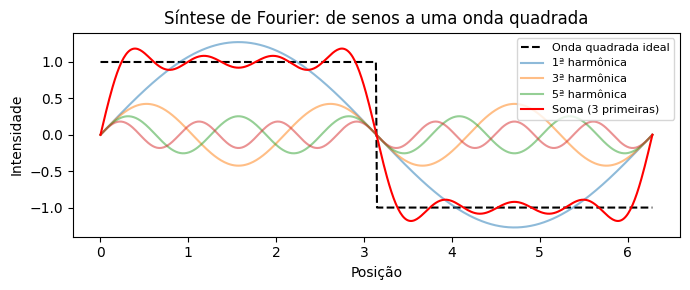
Figura 5.1: Decomposição de Fourier 1D: uma onda quadrada (linha tracejada) é aproximada pela soma das primeiras senoides (linhas coloridas). Quanto mais termos, melhor a aproximação.
5.3.1 Simulador: Reconstruindo Sinais com Senoides
Antes de estudar imagens bidimensionais, o simulador da Figura 5.2 ilustra o princípio da análise de Fourier para sinais unidimensionais: uma forma de onda pode ser aproximada pela soma de senoides com diferentes frequências e amplitudes.
À medida que novos termos são adicionados, a soma das senoides (curva preta) aproxima-se da forma de onda de referência (tracejada). O gráfico inferior apresenta o espectro de amplitudes, indicando a contribuição de cada frequência para a reconstrução do sinal.
DicaAtividade
Explore o simulador e responda:
Quantos termos são necessários para obter uma boa aproximação da onda quadrada?
Qual das três formas de onda converge mais rapidamente? Justifique sua resposta.
Como o espectro de amplitudes se altera ao trocar a onda quadrada pela triangular?
NotaRespostas
1. Quantos termos são necessários para uma boa aproximação da onda quadrada?
Com aproximadamente 15 a 20 termos, a forma da onda já se aproxima bem da referência. Entretanto, próximo às descontinuidades permanece uma pequena oscilação, conhecida como fenômeno de Gibbs, que não desaparece mesmo com a adição de mais termos.
2. Qual forma converge mais rapidamente? Por quê?
A onda triangular converge mais rapidamente, pois as amplitudes de seus harmônicos decaem mais rápido que as da onda quadrada e da onda dente-de-serra. Como consequência, poucos termos já produzem uma boa aproximação.
3. Como o espectro muda entre a onda quadrada e a triangular?
Ambas possuem apenas harmônicos ímpares, mas, na onda triangular, as amplitudes diminuem muito mais rapidamente. Assim, poucos harmônicos são suficientes para reconstruir o sinal com boa precisão.
∿ Simulador: Decomposição de Fourier 1D
soma de senoides
Termos
1
Erro RMS
–
Forma Alvo
quadrada
Forma Alvo
Nº de Termos
1
Exibição
Figura 5.2: Simulador interativo da decomposição de Fourier 1D: visualização da soma de senoides com diferentes frequências, amplitudes e fases. Adicione termos e observe a convergência para formas de onda arbitrárias.
5.3.2 Interpretação do espectro de frequência
Ao aplicar a Transformada Discreta de Fourier (DFT) a uma imagem e visualizar o módulo de seus coeficientes (ver Figura 5.5), obtém-se o espectro de magnitude, que mostra a distribuição das frequências espaciais presentes na imagem.
O coeficiente localizado na origem da DFT, denominado componente DC (Direct Current), corresponde à frequência nula e representa a intensidade média da imagem. Por convenção, esse coeficiente é armazenado no canto superior esquerdo do espectro. Para facilitar sua interpretação, aplica-se a operação FFT Shift, que desloca a componente DC para o centro da imagem. Após esse deslocamento, as baixas frequências concentram-se na região central, enquanto as altas frequências ficam próximas às bordas, como resume a Tabela 5.1.
Tabela 5.1: Correspondência entre as regiões do espectro de magnitude após a aplicação do FFT Shift.
Região do espectro
Componentes predominantes
Exemplos na imagem
Centro (baixas frequências)
Variações espaciais lentas
Iluminação, regiões homogêneas e formas globais
Região intermediária (médias frequências)
Variações de escala intermediária
Texturas e padrões repetitivos
Bordas (altas frequências)
Variações espaciais rápidas
Contornos, detalhes finos e ruído
Essa organização facilita a interpretação do espectro e o projeto de filtros. A atenuação das baixas frequências reduz as variações globais de intensidade, enquanto a atenuação das altas frequências suaviza a imagem ao reduzir detalhes finos e parte do ruído.
5.3.3 O Experimento da Grade: Construindo uma Imagem a partir de um Único Coeficiente
Antes de apresentar a formulação matemática da Transformada Discreta de Fourier (DFT), é útil analisar sua inversa, denominada Transformada Discreta Inversa de Fourier (IDFT). Considere um espectro em que todos os coeficientes sejam nulos, exceto um. Um exemplo dessa construção é apresentado no código da Figura 5.3 e pode ser explorado interativamente no simulador da Figura 5.4.
A imagem reconstruída é uma senoide bidimensional. A posição do coeficiente no espectro determina sua orientação e sua frequência espacial, enquanto sua magnitude e sua fase definem, respectivamente, sua amplitude e seu deslocamento espacial. Assim, cada coeficiente da DFT representa uma componente senoidal, e a imagem original pode ser reconstruída pela soma de todas essas componentes.
N_grid =100espectro_vazio = np.zeros((N_grid, N_grid), dtype=complex)# Acendendo um único ponto (frequência) fora do centrou0, v0 =10, 5espectro_vazio[N_grid//2- v0, N_grid//2- u0] =1000# Retornando para o domínio espacial (IDFT)onda_2d = np.real(np.fft.ifft2(np.fft.ifftshift(espectro_vazio)))onda_vis = cv2.normalize(onda_2d, None, 0, 255, cv2.NORM_MINMAX).astype(np.uint8)espectro_vis = cv2.normalize( np.abs(espectro_vazio), None, 0, 255, cv2.NORM_MINMAX).astype(np.uint8)# Destaque visual do pontoespectro_color = cv2.cvtColor(espectro_vis, cv2.COLOR_GRAY2BGR)cv2.circle(espectro_color, (N_grid//2- u0, N_grid//2- v0), 2, (0, 0, 255), -1)mm.show([espectro_color, onda_vis], titles=["Espectro (1 ponto ativo)", "Onda 2D Resultante (IDFT)"], cols=2, figsize=(10, 4))
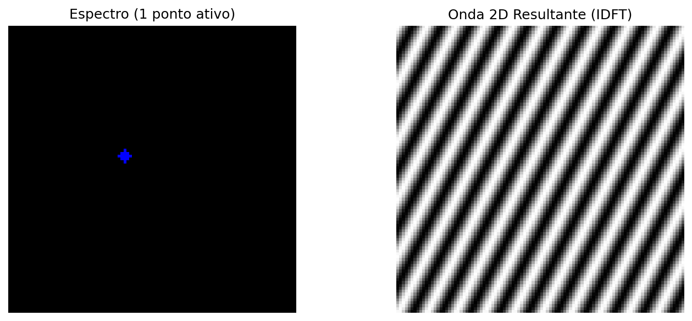
Figura 5.3: Toda frequência no espectro (ponto isolado) corresponde a uma onda senoidal 2D rotacionada no domínio espacial.
∿ Simulador: Síntese de Frequência 2D (IDFT)
Espaço de Fourier
Frequência u
10
Frequência v
5
Distância R
11.18
Ângulo θ
26.6°
Espectro (Clique para mover o ponto)
➔
Onda 2D Resultante (Domínio Espacial)
10
5
Figura 5.4: Simulador interativo da síntese de Fourier 2D. Altere a posição horizontal (\(u\)) e vertical (\(v\)) do coeficiente no espectro de frequências centrado e observe como a distância em relação ao centro dita a frequência espacial (espessura) e o ângulo dita a orientação da onda senoidal gerada.
5.3.4 Definição Matemática
Considere uma imagem \(f(x,y)\) com dimensões \(M \times N\). Sua Transformada Discreta de Fourier 2D (DFT) é definida por:
em que \(u = 0, 1, \ldots, M-1\) e \(v = 0, 1, \ldots, N-1\) representam as frequências discretas nas direções horizontal e vertical, respectivamente. O termo exponencial corresponde a uma senoide bidimensional, cuja frequência e orientação são determinadas pelos índices \((u,v)\).
A Transformada Discreta Inversa de Fourier 2D (IDFT) reconstrói a imagem original a partir de seus coeficientes:
As Equações Equação 5.1 e Equação 5.2 mostram que a DFT e a IDFT formam um par de transformações: a primeira converte a imagem para o domínio da frequência, enquanto a segunda reconstrói exatamente a imagem original a partir de seus coeficientes.
NotaSobre o símbolo \(j\)
O termo \(j\) denota a unidade imaginária, definida por \(j^2 = -1\). Em engenharia e processamento de sinais, adota-se \(j\) em vez de \(i\) para evitar conflito com a notação de corrente elétrica. Sua utilização na exponencial complexa, regida pela fórmula de Euler (\(e^{j\theta} = \cos\theta + j\sin\theta\)), permite representar de forma compacta a amplitude e a fase de cada frequência espacial presente na imagem.
NotaO que é o componente DC?
O coeficiente \(F(0,0)\), denominado componente DC (Direct Current), é igual à soma das intensidades de todos os pixels da imagem (ver Figura 5.5):
\[
F(0,0)=MN\,\bar{f},
\]
em que \(\bar{f}\) é a intensidade média da imagem. Por isso, o componente DC representa o nível médio de intensidade e, na maioria das imagens naturais, possui a maior magnitude do espectro.
Os demais coeficientes representam variações em torno dessa média. Após a aplicação do FFT Shift, o componente DC é deslocado para o centro do espectro, concentrando as baixas frequências na região central e as altas frequências nas bordas.
Anatomia do Espectro de Fourier 2D (após fftshift)
Figura 5.5: Diagrama conceitual do espectro de Fourier 2D centrado.
5.3.5 Magnitude e Fase
Cada coeficiente da Transformada Discreta de Fourier (DFT) é um número complexo e pode ser escrito como
\[
F(u,v)=R(u,v)+j\,I(u,v),
\]
em que \(R(u,v)\) e \(I(u,v)\) correspondem, respectivamente, às partes real e imaginária do coeficiente. Da Equação Equação 5.1, obtêm-se
Assim, cada coeficiente também pode ser escrito em sua forma polar,
\[
F(u,v)=|F(u,v)|\,e^{j\phi(u,v)}.
\]
O espectro de Fourier pode, portanto, ser visualizado por meio de duas imagens distintas: o espectro de magnitude, normalmente utilizado para analisar a distribuição das frequências, e o espectro de fase, que descreve a organização espacial das componentes senoidais.
Embora o espectro de magnitude seja o mais utilizado para inspeção visual, a fase contém grande parte das informações estruturais da imagem. A combinação de magnitude e fase permite reconstruir exatamente a imagem original por meio da IDFT.
5.3.6 O que a Magnitude e a Fase carregam?
Uma demonstração clássica consiste em combinar a magnitude de uma imagem com a fase de outra e reconstruir o resultado. Esse experimento evidencia que:
A fase preserva a estrutura espacial da imagem, incluindo a posição dos objetos, seus contornos e sua geometria. Pequenas alterações na fase podem provocar grandes mudanças visuais.
A magnitude controla como a energia é distribuída entre as frequências espaciais, influenciando principalmente o contraste e a textura.
Quando uma imagem é reconstruída com a magnitude de A e a fase de B, o resultado tende a assemelhar-se mais a B do que a A, evidenciando que a fase é o principal componente responsável pela organização espacial da cena. Entretanto, a magnitude continua sendo importante, pois modula o contraste das estruturas reconstruídas. Assim, uma reconstrução fiel depende da combinação consistente entre magnitude e fase.
Um exemplo desse comportamento é apresentado na Figura 5.6.
NotaAnalogia com Áudio: Limitações e Cuidados
A fase de um sinal desempenha papéis distintos em áudio e imagens:
Áudio estéreo ou multicanal: a fase relativa entre os canais é fundamental para a percepção da posição das fontes sonoras, por meio das diferenças interaurais de tempo (ITD, Interaural Time Differences).
Áudio monaural: a fase absoluta exerce pouca influência perceptual direta.
Imagens (DFT): a fase é o principal fator responsável pela organização espacial da cena, enquanto a magnitude modula o contraste e a distribuição da energia entre as frequências.
Em ambos os domínios, a magnitude está relacionada à intensidade das componentes de frequência: em áudio, influencia o timbre e a intensidade percebida; em imagens, influencia o contraste e a textura.
# ── Experimento: A Importância da Fase ───────────────────────────────────────# ── Carregamento da imagem ────────────────────────────────────────────────────url ="https://upload.wikimedia.org/wikipedia/commons/2/25/GAZI.MD.AHAD_11.jpg"caminho ="imagens/coins.jpg"ifnot os.path.exists(caminho): os.makedirs("imagens", exist_ok=True) img_obj = mm.read(url, pil=True) mm.write(img_obj, caminho)else: img_obj = mm.read(caminho, pil=True)img_color = np.array(img_obj)img_gray = mm.gray(img_color)img_a = cv2.resize(img_gray, (400, 400))# Criar uma imagem B sintética (padrão geométrico)img_b = np.zeros((400, 400), dtype=np.uint8)cv2.rectangle(img_b, (100, 100), (300, 300), 255, -1)cv2.circle(img_b, (200, 200), 150, 128, 10)FA = np.fft.fft2(img_a)FB = np.fft.fft2(img_b)# Troca de Faserec_A_mag_B_fase = np.real(np.fft.ifft2(np.abs(FA) * np.exp(1j* np.angle(FB))))rec_B_mag_A_fase = np.real(np.fft.ifft2(np.abs(FB) * np.exp(1j* np.angle(FA))))mm.show( [img_a, img_b, rec_A_mag_B_fase, rec_B_mag_A_fase], titles=["Imagem A", "Imagem B", "Mag(A) + Fase(B)", "Mag(B) + Fase(A)"], cols=4, figsize=(16, 4))print("💡 A fase preserva bordas e contornos; a magnitude controla contraste e")print("textura. Em áudio estéreo, a fase afeta a localização espacial; em")print("imagens, determina a organização da cena.")
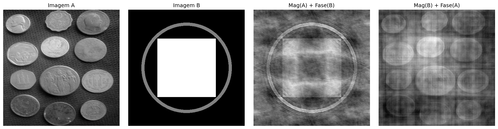
Figura 5.6: Experimento de troca de fase: Imagem A (moedas) e Imagem B (padrão geométrico) reconstruídas com magnitudes e fases trocadas. O resultado mostra que a estrutura visual é muito mais sensível à fase do que à magnitude: quando a fase de B é mantida, a imagem resultante preserva a organização espacial de B, mesmo com a magnitude de A. A magnitude, por sua vez, influencia principalmente o contraste e a textura. Observe que a qualidade da reconstrução não é perfeita — há artefatos visíveis —, evidenciando a interdependência entre fase e magnitude para uma representação fiel da imagem.
💡 A fase preserva bordas e contornos; a magnitude controla contraste e
textura. Em áudio estéreo, a fase afeta a localização espacial; em
imagens, determina a organização da cena.
5.4 Teorema da Convolução e Estratégias de Filtragem
O Teorema da Convolução estabelece uma relação fundamental entre os domínios espacial e da frequência:
em que \(\circledast\) representa a convolução circular discreta. Assim, a convolução entre uma imagem \(f(x,y)\) e um filtro \(h(x,y)\) pode ser substituída pela multiplicação de seus espectros.
Na prática, para obter o mesmo resultado da convolução linear realizada no domínio espacial, aplica-se zero-padding antes da Transformada Rápida de Fourier (FFT), evitando artefatos nas bordas da imagem.
Entretanto, nem sempre a filtragem no domínio da frequência é a alternativa mais eficiente. Para filtros como o Gaussiano e o filtro da média (Box Filter), a propriedade de separabilidade permite reduzir significativamente o custo computacional da convolução no domínio espacial.
5.4.1Kernel Separável vs. Não Separável
Um kernel separável pode ser escrito como o produto externo de dois vetores unidimensionais,
\[
H = v\,h^T,
\]
permitindo que a convolução bidimensional seja substituída por duas convoluções unidimensionais consecutivas: uma na direção horizontal e outra na vertical.
Já um kernel não separável não admite essa decomposição e, portanto, sua convolução deve ser realizada diretamente sobre a vizinhança bidimensional.
Na prática, para um kernel de dimensão \(K \times K\), a convolução direta exige \(K^2\) multiplicações por pixel, enquanto um kernel separável requer apenas \(2K\) multiplicações, reduzindo significativamente o custo computacional.
5.4.2 Análise de Eficiência Computacional
Considere uma imagem de dimensões \(M \times N\) e um filtro quadrado de tamanho \(K \times K\). A Tabela 5.2 compara a complexidade das principais estratégias de filtragem.
Tabela 5.2: Comparação da complexidade da convolução direta, separável e via Transformada Rápida de Fourier (FFT).
Método de Filtragem
Complexidade Assintótica
Dependência de \(K\)
Aplicação típica
Espacial não separável
\(\mathcal{O}(MNK^2)\)
Quadrática
Kernels pequenos e não separáveis
Espacial separável
\(\mathcal{O}(MNK)\)
Linear
Filtros Gaussiano e da média
Via FFT
\(\mathcal{O}(MN\log(MN))\)
Independente de \(K\)
Kernels grandes
Para kernels pequenos, a convolução espacial, especialmente quando o filtro é separável, costuma ser mais eficiente devido ao baixo custo das operações. À medida que o tamanho do kernel aumenta, a filtragem via FFT torna-se mais vantajosa, pois seu custo praticamente independe da dimensão do filtro.
5.4.3 Discussão dos resultados experimentais
O gráfico obtido no ensaio com a imagem das moedas (\(2560 \times 1920\)), apresentado na Figura 5.7, confirma o comportamento previsto pela análise de complexidade computacional.
Convolução não separável (\(\mathcal{O}(MNK^2)\))
A convolução direta apresenta crescimento quadrático com o tamanho do kernel. Para valores pequenos de \(K\), o custo é baixo, mas aumenta rapidamente à medida que o kernel cresce, tornando-se inviável para aplicações em tempo real.
Filtragem via FFT (\(\mathcal{O}(MN \log(MN))\))
O custo da FFT depende apenas do tamanho da imagem, sendo independente de \(K\). Por isso, seu desempenho permanece aproximadamente constante ao variar o kernel, tornando-a vantajosa para filtros grandes ou não separáveis.
Convolução separável (\(\mathcal{O}(MNK)\))
A decomposição do kernel em dois filtros unidimensionais reduz significativamente o custo computacional. Na prática, essa abordagem tende a ser a mais eficiente para filtros separáveis, especialmente em implementações otimizadas.
Em geral, a escolha do método depende do tamanho e da estrutura do kernel. Filtros separáveis são mais eficientes no domínio espacial, enquanto a FFT se torna mais vantajosa para kernels grandes ou múltiplas convoluções no domínio da frequência.
\[
g = \mathcal{F}^{-1}\bigl[\mathcal{F}(f)\cdot \mathcal{F}(h)\bigr]
\quad \text{(FFT)}
\qquad
g = f \circledast h
\quad \text{(convolução direta)}
\qquad
g = (f \circledast v) \circledast h^T
\quad \text{(separável)}
\tag{5.4}\]
onde:
\(f(x,y)\) representa a imagem de entrada;
\(h(x,y)\) é o kernel bidimensional do filtro;
\(v\) e \(h^T\) são, respectivamente, os vetores vertical e horizontal que compõem o kernel separável.
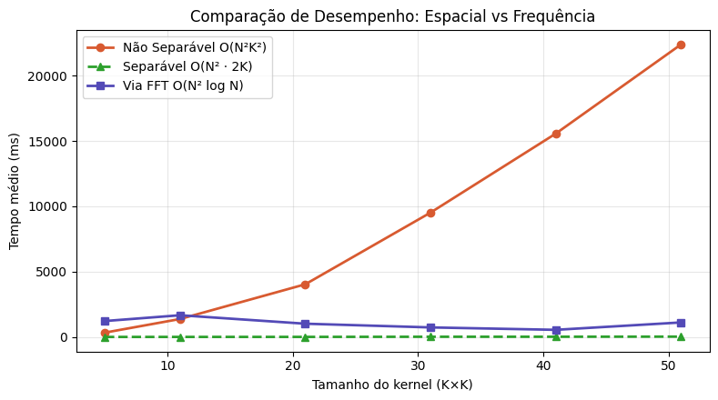
Figura 5.7: Comparação de eficiência: Convolução Não Separável (Espacial 2D), Separável (Espacial 1D) e via FFT.
ImportanteO problema da convolução circular (wrap-around)
A Transformada Discreta de Fourier (DFT) assume que a imagem é periodicamente estendida no espaço, isto é, que suas bordas se repetem indefinidamente.
Nessa condição, a multiplicação no domínio da frequência corresponde a uma convolução circular no domínio espacial. Como consequência, regiões opostas da imagem (topo e base, esquerda e direita) passam a interagir artificialmente, conforme ilustrado na Figura 5.8.
A aplicação de zero-padding antes da FFT reduz esse efeito ao estender a imagem com valores nulos nas bordas, aproximando o resultado da convolução linear. Esse comportamento pode ser interpretado à luz do Teorema da Convolução, apresentado na Figura 5.9.
# ── Definir M e N ─────────────────────────────────────────────────────────────M, N = img_gray.shape # linha adicionada# Simulação de um filtro de deslocamento brutalH_shift = np.zeros_like(img_gray, dtype=complex)for u inrange(M):for v inrange(N): H_shift[u, v] = np.exp(-1j*2* np.pi * (u*120/M + v*120/N))# Filtragem SEM padding (causa o wrap-around)F_img = np.fft.fft2(img_gray)img_vazada = np.real(np.fft.ifft2(F_img * H_shift))img_vazada_vis = cv2.normalize(img_vazada, None, 0, 255, cv2.NORM_MINMAX).astype(np.uint8)mm.show([img_gray, img_vazada_vis], titles=["Original", "Filtragem s/ Padding (Vazamento)"], cols=2, figsize=(10, 4))
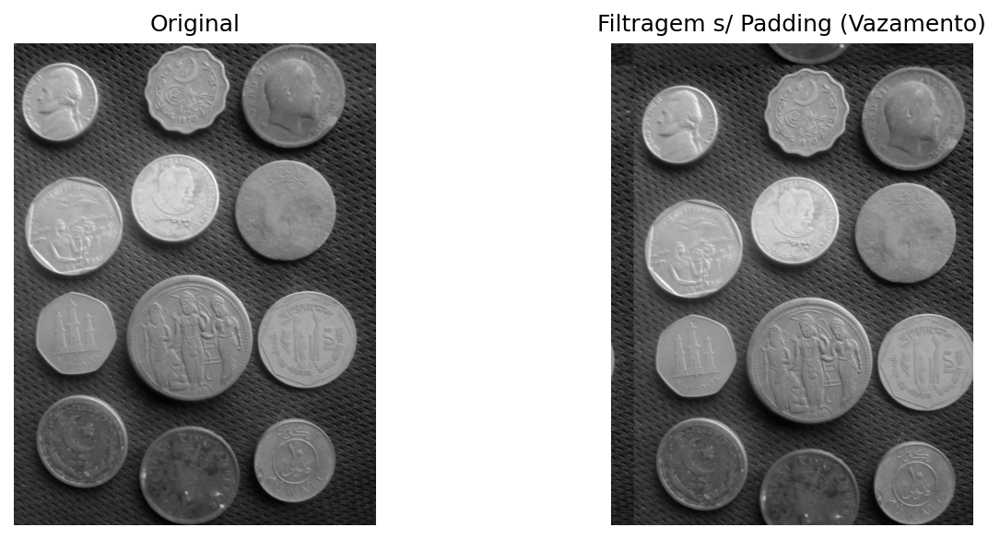
Figura 5.8: Sem padding, um deslocamento severo faz a imagem vazar para o lado oposto (convolução circular).
# ── Kernel Gaussiano 11×11 sigma =3.0K =11ks = np.arange(K) - K //2gauss1d = np.exp(-ks**2/ (2* sigma**2))gauss1d /= gauss1d.sum()kernel = np.outer(gauss1d, gauss1d) # kernel 2D separável# ── Método 1: Convolução espacial direta ─────────────────────────────────────f_float = img_gray.astype(np.float64)conv_esp = cv2.filter2D(f_float, -1, kernel, borderType=cv2.BORDER_CONSTANT)# ── Método 2: Multiplicação em frequência (via FFT) ──────────────────────────M, N = f_float.shape# Padding para convolução linear (evita aliasing circular)Mpad =2**int(np.ceil(np.log2(M + K -1)))Npad =2**int(np.ceil(np.log2(N + K -1)))# Posiciona o kernel com a origem no (0,0) e padding com zeroskernel_pad = np.zeros((Mpad, Npad))kh, kw = kernel.shapekernel_pad[:kh, :kw] = kernelF_img = np.fft.fft2(f_float, (Mpad, Npad))F_kern = np.fft.fft2(kernel_pad)conv_freq = np.real(np.fft.ifft2(F_img * F_kern))# Recorte para compensar o deslocamento introduído pelo posicionamento do kerneloffset = K //2conv_freq_crop = conv_freq[offset:offset+M, offset:offset+N]# ── Verificação numérica ──────────────────────────────────────────────────────diff = np.abs(conv_esp - conv_freq_crop)print(f"Diferença máxima (|conv_esp - conv_freq|): {diff.max():.2e}")print(f"Diferença média (|conv_esp - conv_freq|): {diff.mean():.2e}")print(f"→ Teorema da Convolução verificado numericamente.")conv_esp_vis = cv2.normalize(conv_esp, None, 0, 255, cv2.NORM_MINMAX).astype(np.uint8)conv_freq_vis = cv2.normalize(conv_freq_crop, None, 0, 255, cv2.NORM_MINMAX).astype(np.uint8)diff_vis = cv2.normalize(diff, None, 0, 255, cv2.NORM_MINMAX).astype(np.uint8)mm.show( [img_gray, conv_esp_vis, conv_freq_vis, diff_vis], titles=["Original","Convolução espacial","Multiplicação em frequência",f"Diferença (máx={diff.max():.1e})" ], cols=4, figsize=(16, 5))
Diferença máxima (|conv_esp - conv_freq|): 2.56e-13
Diferença média (|conv_esp - conv_freq|): 2.76e-14
→ Teorema da Convolução verificado numericamente.
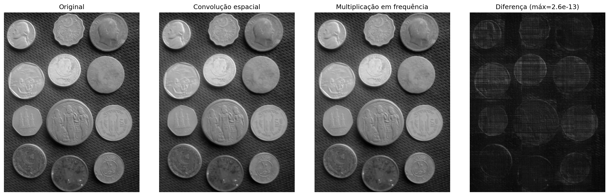
Figura 5.9: Verificação do Teorema da Convolução: a diferença pixel a pixel entre a convolução espacial (cv2.filter2D) e a multiplicação em frequência (FFT) é numericamente nula — confirmando a equivalência teórica.
NotaSobre a diferença numérica
A diferença residual da ordem de \(10^{-13}\) não viola o Teorema da Convolução, mas reflete limitações computacionais inerentes à aritmética de ponto flutuante (precisão dupla, ~\(10^{-16}\)) e à ordem de operações entre os dois métodos:
Convolução espacial: soma ponderada de vizinhos com arredondamentos sucessivos.
Convolução em frequência: envolve três transformadas FFT e uma multiplicação complexa, sujeita a erros de truncamento e quantização.
Portanto, a igualdade teórica é exata, mas a implementação numérica produz uma diferença praticamente nula (erro relativo < \(10^{-12}\)), confirmando o teorema dentro da precisão da máquina.
5.5 Filtros no Domínio da Frequência
Um filtro no domínio da frequência pode ser interpretado como uma função de transferência aplicada ao espectro da imagem. Nessa representação, cada coeficiente de frequência é multiplicado por um valor entre 0 e 1, que determina sua atenuação ou preservação. A forma dessa função define o efeito visual do filtro.
Corte abrupto e ringing. Filtros ideais com transição instantânea em uma frequência de corte \(D_0\) produzem descontinuidades no domínio da frequência. Essa descontinuidade se reflete no domínio espacial como oscilações próximas a bordas, conhecidas como ringing. Esse efeito está associado à convolução com funções de suporte infinito no espaço, como a função sinc, conforme ilustrado na Figura 5.10.
Filtros com transição suave. Alternativas como os filtros Gaussiano e Butterworth suavizam a transição entre regiões de passagem e rejeição, reduzindo o ringing. Em contrapartida, essa suavização implica uma fronteira de separação menos definida entre frequências preservadas e atenuadas.
# Simulando o Filtro Ideal na Frequência (Cilindro) e sua representação Espacial (Sinc)N_grid =2**7u = np.arange(-N_grid//2, N_grid//2)U, V = np.meshgrid(u, u)D = np.sqrt(U**2+ V**2)# Frequência: Cilindro Ideal (1 no centro, 0 fora do raio 20)H_freq = np.zeros((N_grid, N_grid))H_freq[D <=20] =1# Espaço: A inversa resulta na famigerada Sinc 2Dh_space = np.fft.fftshift(np.real(np.fft.ifft2(np.fft.ifftshift(H_freq))))fig, ax = plt.subplots(1, 2, subplot_kw={'projection': '3d'}, figsize=(12, 4))ax[0].plot_surface(U, V, H_freq, cmap='viridis', edgecolor='none')ax[0].set_title("Frequência: Filtro Ideal (Cilindro)")ax[0].set_zlim(0, 1.2)ax[1].plot_surface(U, V, h_space, cmap='plasma', edgecolor='none')ax[1].set_title("Espaço Real: Ondulações da Sinc (Causa do Ringing)")plt.tight_layout(); plt.show()
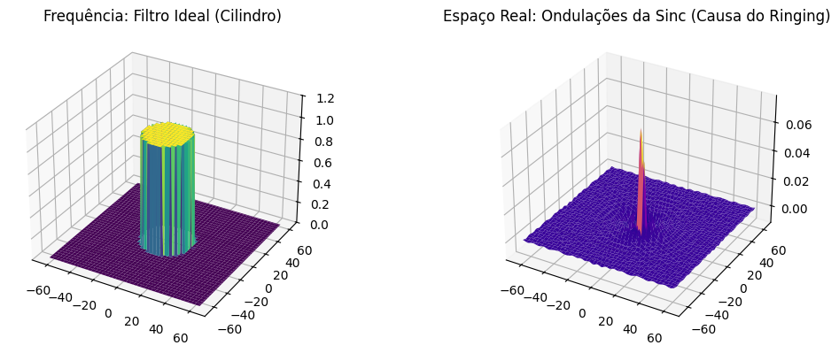
Figura 5.10: A Dualidade Perigosa: O corte abrupto na Frequência (Cilindro) transforma-se obrigatoriamente numa Sinc espacial. Suas ondulações causam o ringing fantasma nas bordas da imagem.
5.5.1 Filtros Passa-Baixa
Filtros passa-baixa atenuam componentes de alta frequência, resultando em suavização da imagem e redução de ruído. Após a centralização do espectro (FFT Shift), a distância de cada ponto ao centro é dada por:
O corte abrupto em \(D_0\) introduz descontinuidades no domínio da frequência, resultando em oscilações no domínio espacial conhecidas como ringing. Esse efeito está associado à convolução com funções de suporte infinito.
A suavidade da função Gaussiana no domínio da frequência evita descontinuidades, o que elimina o ringing e produz uma transição gradual entre frequências preservadas e atenuadas.
O parâmetro \(n\) controla a suavidade da transição entre passagem e rejeição de frequências. Valores pequenos produzem transições suaves, enquanto valores grandes aproximam o comportamento do filtro ideal, com maior risco de ringing. Um exemplo comparativo é apresentado na Figura 5.11.
Perfis dos Filtros Passa-Baixa — comparação visual (D₀ = 30)
À medida que a ordem do Butterworth aumenta, o perfil se aproxima do filtro Ideal — e o ringing aumenta.
Figura 5.11: Filtros passa-baixa.
5.5.2 Filtros Passa-Alta e Passa-Banda
Filtros passa-alta podem ser obtidos a partir de um filtro passa-baixa complementar, definido como:
\[
H_{\text{HP}}(u,v) = 1 - H_{\text{LP}}(u,v)
\]
Esse tipo de filtro preserva componentes de alta frequência, realçando bordas e detalhes, enquanto atenua regiões de variação suave.
Filtros passa-banda preservam apenas uma faixa intermediária de frequências, limitada por dois raios \(D_L\) e \(D_H\):
Esse tipo de filtragem é útil quando se deseja remover simultaneamente componentes de baixa e alta frequência, preservando apenas estruturas de escala intermediária.
Uma aplicação importante é a remoção de ruído periódico, no qual padrões regulares aparecem como picos localizados no espectro de magnitude. Esses picos podem ser atenuados por meio de filtros notch (rejeita-banda), posicionados especificamente nas frequências indesejadas.
Figura 5.12: Simulador interativo de filtros no domínio da frequência.
import iodef distancia_centro(M, N):"""Matriz de distâncias ao centro do espectro.""" u = np.arange(M) - M //2 v = np.arange(N) - N //2 V, U = np.meshgrid(v, u)return np.sqrt(U**2+ V**2)def aplicar_filtro_freq(img, H):"""Aplica filtro H (centrado) a imagem via FFT.""" F = np.fft.fftshift(np.fft.fft2(img.astype(np.float64))) Fg = F * H g = np.real(np.fft.ifft2(np.fft.ifftshift(Fg)))return cv2.normalize(g, None, 0, 255, cv2.NORM_MINMAX).astype(np.uint8)M, N = img_gray.shapeD = distancia_centro(M, N)D0 =30# frequência de corten_bw =2# ordem do Butterworth# ── Funções de transferência ──────────────────────────────────────────────────H_ideal = (D <= D0).astype(np.float64)H_gauss = np.exp(-D**2/ (2* D0**2))H_bw =1.0/ (1.0+ (D / D0)**(2* n_bw))# ── Imagens filtradas ─────────────────────────────────────────────────────────img_ideal = aplicar_filtro_freq(img_gray, H_ideal)img_gauss = aplicar_filtro_freq(img_gray, H_gauss)img_bw = aplicar_filtro_freq(img_gray, H_bw)# ── Perfis de H(u,v) ─────────────────────────────────────────────────────────def fig2img(fig): b = io.BytesIO(); fig.savefig(b, format='png', dpi=100); plt.close(fig); b.seek(0)return (plt.imread(b)[:,:,:3]*255).astype(np.uint8)fig, ax = plt.subplots(figsize=(6, 3))linha = M //2ax.plot(H_ideal[linha, :], label="Ideal", color="#D85A30", lw=1.5, ls="--")ax.plot(H_gauss[linha, :], label="Gaussiano", color="#1D9E75", lw=1.5)ax.plot(H_bw[linha, :], label="Butterworth", color="#534AB7", lw=1.5)ax.axvline(N//2-D0, color="#aaa", lw=0.8, ls=":")ax.axvline(N//2+D0, color="#aaa", lw=0.8, ls=":")ax.set(title="Perfis H(u,v) — linha central", xlabel="v", ylabel="H(u,v)")ax.legend(fontsize=8); plt.tight_layout()perfil_img = fig2img(fig)# ── Filtros H visualizados ────────────────────────────────────────────────────def H_vis(H):return cv2.normalize((H*255).astype(np.uint8), None, 0, 255, cv2.NORM_MINMAX)mm.show( [img_gray, img_ideal, img_gauss, img_bw, H_vis(H_ideal), H_vis(H_gauss), H_vis(H_bw), perfil_img], titles=["Original", "LPF Ideal", "LPF Gaussiano", "LPF Butterworth (n=2)","H Ideal", "H Gaussiano","H Butterworth", "Perfis H(u,v)" ], cols=4, figsize=(16, 9))
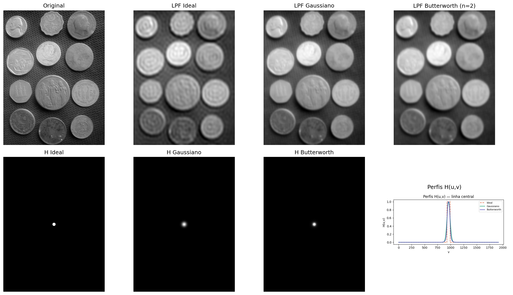
Figura 5.13: Comparação entre filtros passa-baixa: Ideal (D₀=30), Gaussiano (D₀=30) e Butterworth (D₀=30, n=2). Perfis de H(u,v) ao longo de uma linha central e imagens filtradas correspondentes.
Figura 5.14: Filtro passa-alta Gaussiano. (a) Original; (b) Filtro passa-alta (D₀=30) - as bordas das moedas e fundo texturizado são realçados.
5.5.3 Remoção de Ruído Periódico
Ruído periódico — associado a interferências elétricas, padrões regulares de sensores ou artefatos de digitalização — aparece no espectro de Fourier como picos pontuais simétricos em torno do centro.
O filtro rejeita-banda (notch) atenua seletivamente essas frequências, preservando as demais componentes da imagem. Um exemplo de aplicação é apresentado na Figura 5.15.
# ── Imagem com ruído periódico sintético ──────────────────────────────────────h_img, w_img = img_gray.shapex = np.arange(w_img)y = np.arange(h_img)X, Y = np.meshgrid(x, y)# Usar frequências inteiras e consistentes (importante para restauração perfeita)u0, v0 =20, 20# frequências exatas do ruídoruido =40* np.sin(2* np.pi * (u0 * X / w_img + v0 * Y / h_img))img_ruidosa = np.clip(img_gray.astype(np.float64) + ruido, 0, 255).astype(np.uint8)# ── Espectro da imagem ruidosa ───────────────────────────────────────────────F_r = np.fft.fftshift(np.fft.fft2(img_ruidosa.astype(np.float64)))mag_r = np.log1p(np.abs(F_r))mag_vis = cv2.normalize(mag_r, None, 0, 255, cv2.NORM_MINMAX).astype(np.uint8)# ── Máscara notch ────────────────────────────────────────────────────────────mascara = np.ones((h_img, w_img), dtype=np.float64)r_notch =8# raio do notch (ajuste fino se necessário)def suprimir_pico(mask, cy, cx, r):"""Zera um disco de raio r centrado em (cy, cx)""" yy, xx = np.ogrid[:mask.shape[0], :mask.shape[1]] dist = np.sqrt((yy - cy)**2+ (xx - cx)**2) mask[dist <= r] =0return mask# Coordenadas centraiscy, cx = h_img //2, w_img //2# Suprimir os 4 picos simétricos (importante!)for dy, dx in [(v0, u0), (-v0, -u0), (v0, -u0), (-v0, u0)]: mascara = suprimir_pico(mascara, cy + dy, cx + dx, r_notch)mascara_vis = (mascara *255).astype(np.uint8)# ── Filtragem e reconstrução ─────────────────────────────────────────────────F_filtrada = F_r * mascaraimg_rest = np.real(np.fft.ifft2(np.fft.ifftshift(F_filtrada)))img_rest_vis = cv2.normalize(img_rest, None, 0, 255, cv2.NORM_MINMAX).astype(np.uint8)# Avaliaçãopsnr = cv2.PSNR(img_gray, img_rest_vis)ssim = cv2.SSIM(img_gray, img_rest_vis) ifhasattr(cv2, 'SSIM') else"N/A"#ssim = ssim_sk(img_gray, img_rest_vis, data_range=255)print(f"PSNR (original vs restaurada): {psnr:.2f} dB")# ── Visualização ─────────────────────────────────────────────────────────────mm.show( [img_ruidosa, mag_vis, mascara_vis, img_rest_vis], titles=["Com ruído periódico","Espectro (log)","Máscara notch",f"Restaurada (PSNR={psnr:.1f} dB)" ], cols=4, figsize=(16, 4))
PSNR (original vs restaurada): 32.93 dB
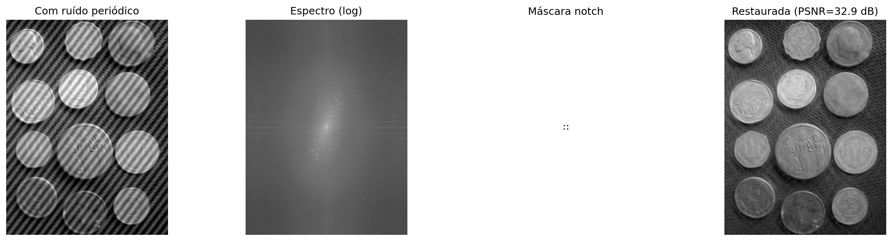
Figura 5.15: Remoção de ruído periódico via filtro notch no domínio da frequência: (a) imagem com ruído senoidal, (b) espectro mostrando os picos do ruído, (c) máscara notch centrada nos picos, (d) imagem restaurada.
📌 Síntese — Filtros Espectrais
Filtro
Efeito visual
Artefato
Uso
Passa-baixa ideal
Suavização intensa
Ringing
Ilustrativo
Passa-baixa Gaussiano
Suavização suave
Não apresenta ringing
Suavização geral
Passa-baixa Butterworth
Suavização controlada
Ringing (ordens altas)
Compromisso entre suavização e seletividade
Passa-alta
Realce de bordas
Amplificação de ruído
Detecção de contornos
Notch
Remoção seletiva de frequências
Possíveis distorções locais
Remoção de ruído periódico
O projeto de filtros no domínio da frequência consiste na definição de máscaras espectrais. Entretanto, efeitos no domínio espacial, como ringing e borramento, emergem diretamente dessas escolhas no espectro.
5.6Wavelets e Multirresolução
A Transformada de Fourier decompõe o sinal em frequências globais: cada coeficiente \(F(u,v)\) recebe contribuições de toda a imagem, sem informação explícita sobre a localização espacial dessas frequências. Assim, estruturas localizadas, como bordas, são representadas de forma distribuída no espectro.
As wavelets (ondaletas) superam essa limitação ao utilizar funções base localizadas no espaço, que podem ser deslocadas e escaladas. Essas funções possuem suporte compacto, isto é, são diferentes de zero apenas em uma região finita do domínio, permitindo uma representação simultânea em termos de frequência e localização espacial.
5.6.1 O Limite da Transformada de Fourier: localização espacial
A Transformada de Fourier descreve com precisão quais frequências estão presentes em um sinal, mas não representa explicitamente onde essas frequências ocorrem no espaço.
No experimento apresentado na Figura 5.16, duas imagens com estruturas localizadas em posições diferentes produzem espectros de magnitude praticamente idênticos. Isso ocorre porque a representação de Fourier é global: cada coeficiente recebe contribuição de toda a imagem.
Como consequência, o espectro de magnitude não representa explicitamente a localização de bordas ou outras estruturas, apenas a distribuição das frequências presentes. Essa limitação motivou o desenvolvimento de representações multirresolução, como a Transformada Wavelet Discreta (DWT), capazes de descrever simultaneamente a frequência e a localização espacial das estruturas da imagem.
Figura 5.16: Fourier global é cego para a posição. Os espectros não dizem onde as bordas estão.
5.6.2 Transformada Wavelet Discreta 2D
A Transformada Wavelet Discreta (DWT) aplica, separadamente nas direções horizontal e vertical, dois filtros complementares: um passa-baixa\(h\) (aproximação) e um passa-alta\(g\) (detalhes), seguidos de subamostragem por um fator de 2 em cada dimensão. Esse processo produz quatro subbandas, cujos nomes indicam a combinação dos filtros aplicados em cada direção (L = Low-pass, passa-baixa; H = High-pass, passa-alta). As características de cada subbanda são resumidas na Tabela 5.3.
Tabela 5.3: Subbandas produzidas pela Transformada Wavelet Discreta 2D (DWT), indicando os filtros aplicados em cada direção e o conteúdo predominante de cada componente.
Subbanda
Filtros aplicados
Conteúdo visual
LL
baixa × baixa
Aproximação da imagem (versão suavizada e reduzida)
LH
baixa × alta
Bordas horizontais e variações verticais
HL
alta × baixa
Bordas verticais e variações horizontais
HH
alta × alta
Detalhes diagonais e texturas
A decomposição pode ser aplicada recursivamente sobre a subbanda LL, gerando uma representação multirresolução. Após \(J\) níveis, obtém-se uma estrutura com \(3J+1\) subbandas, em que cada novo nível reduz a resolução da componente de aproximação.
NotaConexão com CNNs
A decomposição multirresolução das wavelets possui uma relação conceitual com as representações hierárquicas utilizadas em redes neurais convolucionais (CNNs). Em ambos os casos, sucessivas etapas de filtragem e redução de resolução produzem descrições cada vez mais abstratas da imagem. Entretanto, as wavelets utilizam filtros matematicamente definidos e reconstruíveis, enquanto as CNNs aprendem seus filtros durante o treinamento.
5.6.3 Famílias de Wavelets
Diferentes famílias de wavelets apresentam compromissos distintos entre suporte espacial, suavidade e capacidade de compressão. O suporte corresponde à extensão da função wavelet no domínio espacial: quanto menor o suporte, mais localizada é a função; quanto maior, mais suave tende a ser sua representação, porém com maior custo computacional. A Tabela 5.4 compara algumas das famílias mais utilizadas.
Tabela 5.4: Comparação entre famílias de wavelets, destacando o comprimento do suporte, o número de momentos nulos, a simetria e aplicações típicas.
Wavelet
Comprimento do suporte
Momentos nulos
Simetria
Uso típico
Haar
2
1
Assimétrica
Introdução e análise básica
Daubechies db4
8
4
Assimétrica
Compressão e análise geral
Symlet sym4
8
4
Quase simétrica
Reconstrução de sinais
Biortogonal 5/3
5/3
2/2
Simétrica
JPEG 2000 sem perda
Biortogonal 9/7
9/7
4/4
Simétrica
JPEG 2000 com perda
Os momentos nulos medem a capacidade da wavelet de representar regiões suaves da imagem com poucos coeficientes diferentes de zero. Uma wavelet com \(p\) momentos nulos anula exatamente polinômios de grau até \(p-1\). Em consequência, quanto maior o número de momentos nulos, maior tende a ser a eficiência de compressão em regiões homogêneas, embora isso geralmente implique funções com suporte mais longo.
A Figura 5.17 apresenta as funções de base (wavelets) \(\psi(t)\) no domínio espacial. Essas funções possuem suporte compacto, isto é, são diferentes de zero apenas em uma região finita do domínio, ao contrário das senoides da Transformada de Fourier, que se estendem por todo o domínio.
Figura 5.17: Funções da Wavelet (ψ). Note como elas rapidamente decaem para zero (suporte compacto), ao contrário das senoides infinitas de Fourier.
O diagrama da Figura 5.18 ilustra a análise multirresolução realizada pela DWT, na qual a subbanda de aproximação (LL) é sucessivamente decomposta, formando uma representação hierárquica com dois níveis.
Figura 5.18: Diagrama da decomposição wavelet 2D em dois níveis.
O simulador da Figura 5.19 permite explorar interativamente a Transformada Wavelet Discreta 2D (DWT) utilizando a wavelet de Haar. A decomposição em subbandas evidencia a separação entre a componente de aproximação e as componentes de detalhe da imagem.
Os diferentes padrões de entrada permitem observar o comportamento direcional dos filtros. Em imagens com bordas horizontais e verticais, as subbandas LH e HL destacam, respectivamente, as variações verticais e horizontais da intensidade. Em regiões de variação suave, a maior parte da energia concentra-se na subbanda de aproximação LL, enquanto as subbandas de detalhe apresentam coeficientes próximos de zero.
A análise multirresolução também pode ser observada ao aumentar o número de níveis de decomposição. Nesse caso, apenas a subbanda \(\text{LL}_1\) é novamente decomposta, originando as subbandas \(\text{LL}_2\), \(\text{LH}_2\), \(\text{HL}_2\) e \(\text{HH}_2\), que formam o segundo nível da representação hierárquica.
Em padrões formados por regiões homogêneas de grande extensão, como um degradê suave ou um tabuleiro composto por blocos grandes, a energia permanece predominantemente concentrada na subbanda LL. No degradê, isso ocorre porque as diferenças entre pixels vizinhos são pequenas. No tabuleiro, por sua vez, os pixels possuem praticamente a mesma intensidade no interior de cada bloco, de modo que apenas as fronteiras entre blocos produzem coeficientes não nulos nas subbandas de detalhe. Como essas fronteiras ocupam apenas uma pequena fração da imagem, sua contribuição para a energia total permanece reduzida.
Para viabilizar a análise visual dessas variações sutis, o simulador incorpora um controle de ganho de contraste dos detalhes (variando de 1 a 8). Esse parâmetro funciona como um fator de amplificação linear aplicado exclusivamente aos coeficientes das subbandas de detalhe (LH, HL e HH) antes de sua renderização em tela. Em cenários de transição suave (como o gradiente) ou de uniformidade local (como o interior dos blocos do tabuleiro), as diferenças numéricas calculadas pelo filtro passa-altas de Haar resultam em coeficientes muito próximos de zero, o que tornaria os quadrantes correspondentes escuros e imperceptíveis a olho nu. Ao multiplicar esses valores pelo ganho, o simulador resgata visualmente as estruturas de alta frequência ocultas e realça a orientação das bordas remanescentes.
O gráfico de energia por subbanda quantifica essa distribuição entre a componente de aproximação e as componentes de detalhe, demonstrando que o ganho visual não altera a métrica original da energia. Em imagens naturais, a maior parte da energia concentra-se na subbanda LL, enquanto as subbandas LH, HL e HH representam principalmente bordas, texturas e outras variações locais da intensidade.
Imagem original
Decomposição wavelet (mosaico)
Energia por subbanda (%) — soma preservada (Parseval)
LL — aproximação
Versão suavizada e reduzida da imagem
LH — detalhe horizontal
Realça bordas horizontais (variação vertical)
HL — detalhe vertical
Realça bordas verticais (variação horizontal)
HH — detalhe diagonal
Texturas e cantos (variação em ambas direções)
Figura 5.19: Simulação da decomposição wavelet 2D.
5.6.4 Análise Multirresolução com a DWT 2D
A Transformada Wavelet Discreta 2D (DWT) decompõe uma imagem em componentes de aproximação e detalhe, organizadas de forma hierárquica em diferentes escalas e orientações. Como as subbandas de detalhe em imagens naturais frequentemente apresentam coeficientes de baixo contraste, os exemplos práticos a seguir utilizam um padrão geométrico sintético gerado em Python. Essa abordagem replica o comportamento do simulador da Figura 5.19, tornando visualmente explícitos os efeitos da filtragem espacial e da decomposição multirresolução.
5.6.4.1 Decomposição em Mosaico de Múltiplos Níveis
A Figura 5.20 ilustra a estrutura hierárquica da DWT em dois níveis utilizando a wavelet de Haar. O processo baseia-se na aplicação combinada de filtros passa-baixa e passa-alta nas direções horizontal e vertical, seguidos por subamostragem por um fator de 2.
No primeiro nível, a imagem original origina a subbanda de aproximação (\(LL_1\)) e as componentes de detalhe horizontal (\(LH_1\)), vertical (\(HL_1\)) e diagonal (\(HH_1\)). Na análise multirresolução, a subbanda \(LL_1\) é novamente filtrada e subamostrada, gerando o segundo nível de decomposição (\(LL_2\), \(LH_2\), \(HL_2\) e \(HH_2\)).
Para viabilizar a interpretação visual das componentes de detalhe, o código extrai o valor absoluto de seus coeficientes e aplica uma normalização linear (min-max) para ocupar toda a faixa dinâmica de tons de cinza [0, 255]. Essa operação transforma regiões homogêneas (coeficientes nulos) em preto e destaca em branco as bordas e texturas extraídas em cada escala e orientação.
try:import pywt HAS_PYWT =TrueexceptImportError:import subprocess subprocess.run(["pip", "install", "PyWavelets", "-q"])import pywt HAS_PYWT =Trueimport numpy as npimport cv2# ── Geração da Imagem Sintética (Mesmo padrão 'combined' do simulador) ────────def gerar_imagem_sintetica(N=256): img = np.zeros((N, N), dtype=np.float64)for y inrange(N):for x inrange(N): v =55+35* (x / N) +15* np.sin(y /24)# Quadradoif24< x <100and24< y <100: v =225# Círculo cx, cy, r =190, 76, 34if (x - cx)**2+ (y - cy)**2< r**2: v =205# Textura periódica (inferior)if y >164and y <244: p =12 v =185if ((x // p + y // p) %2==0) else65# Linha diagonalifabs(x - y) <4: v =240 img[y, x] = np.clip(v, 0, 255)return img.astype(np.uint8)# Substitui a imagem escura de moedas pelo padrão sintético claroimg_gray = gerar_imagem_sintetica(256)# ── Decomposição wavelet 2 níveis ─────────────────────────────────────────────wavelet ="haar"img_float = img_gray.astype(np.float64)# Nível 1coefs1 = pywt.dwt2(img_float, wavelet)LL1, (LH1, HL1, HH1) = coefs1# Nível 2 (aplicado sobre LL1)coefs2 = pywt.dwt2(LL1, wavelet)LL2, (LH2, HL2, HH2) = coefs2def sb_vis(sb):"""Normaliza subbanda para visualização [0,255]."""return cv2.normalize(np.abs(sb), None, 0, 255, cv2.NORM_MINMAX).astype(np.uint8)print(f"Forma original : {img_gray.shape}")print(f"LL1 (nível 1) : {LL1.shape} | LH1/HL1/HH1: {LH1.shape}")print(f"LL2 (nível 2) : {LL2.shape} | LH2/HL2/HH2: {LH2.shape}")imgs_dwt = [img_gray, sb_vis(LL1), sb_vis(LH1), sb_vis(HL1), sb_vis(HH1), sb_vis(LL2), sb_vis(LH2), sb_vis(HL2), sb_vis(HH2)]titles_dwt = ["Original","LL₁ (aprox.)", "LH₁ (horiz.)", "HL₁ (vert.)", "HH₁ (diag.)","LL₂ (aprox.)", "LH₂ (horiz.)", "HL₂ (vert.)", "HH₂ (diag.)"]mm.show(imgs_dwt, titles=titles_dwt, cols=5, figsize=(16, 7))
Figura 5.20: Decomposição wavelet 2D de 2 níveis com wavelet Haar: subbandas LL, LH, HL, HH em cada nível. As subbandas de detalhe revelam estruturas orientadas em diferentes escalas utilizando um padrão sintético.
5.6.4.2 O Compromisso entre Localização e Suavidade
A escolha da função de base (wavelet) influencia diretamente a forma como as feições da imagem são distribuídas e codificadas pelos coeficientes da DWT. A Figura 5.21 compara os resultados práticos obtidos ao aplicar quatro famílias distintas sobre o padrão geométrico sintético: haar, db4, sym4 e bior2.2.
Por possuir suporte curto e formato de função degrau, a wavelet de Haar produz coeficientes altamente localizados nas descontinuidades espaciais, gerando bordas finas e nítidas nas subbandas de detalhe. Em contrapartida, famílias como Daubechies (db4) e Symlets (sym4), que apresentam maior suporte (filtros mais longos) e maior número de momentos nulos, geram respostas mais suaves e distribuídas ao redor das transições, o que pode introduzir leves oscilações ou borramentos nas fronteiras abruptas.
Esse comportamento evidencia o clássico compromisso (trade-off) da análise de multirresolução: suportes menores favorecem a localização espacial exata das bordas, enquanto suportes maiores e maior número de momentos nulos tendem a produzir representações mais esparsas e suaves. Essa suavidade e capacidade de atenuação de altas frequências garantem maior eficiência na compactação da energia, características fundamentais para aplicações de compressão de dados e remoção de ruído (denoising).
import numpy as npimport cv2import pywt# Garante que img_gray e img_float utilizem o mesmo padrão sintético claroif'gerar_imagem_sintetica'inglobals(): img_gray = gerar_imagem_sintetica(256)else:# Fallback caso o bloco anterior não tenha sido executado na mesma sessãodef gerar_imagem_sintetica(N=256): img = np.zeros((N, N), dtype=np.float64)for y inrange(N):for x inrange(N): v =55+35* (x / N) +15* np.sin(y /24)if24< x <100and24< y <100: v =225 cx, cy, r =190, 76, 34if (x - cx)**2+ (y - cy)**2< r**2: v =205if y >164and y <244: p =12 v =185if ((x // p + y // p) %2==0) else65ifabs(x - y) <4: v =240 img[y, x] = np.clip(v, 0, 255)return img.astype(np.uint8) img_gray = gerar_imagem_sintetica(256)img_float = img_gray.astype(np.float64)wavelets_comp = ["haar", "db4", "sym4", "bior2.2"]imgs_comp, titles_comp = [], []for wname in wavelets_comp: LL, (LH, HL, HH) = pywt.dwt2(img_float, wname) imgs_comp += [sb_vis(LL), sb_vis(HH)] titles_comp += [f"{wname} — LL₁", f"{wname} — HH₁"]mm.show(imgs_comp, titles=titles_comp, cols=4, figsize=(14, 8))
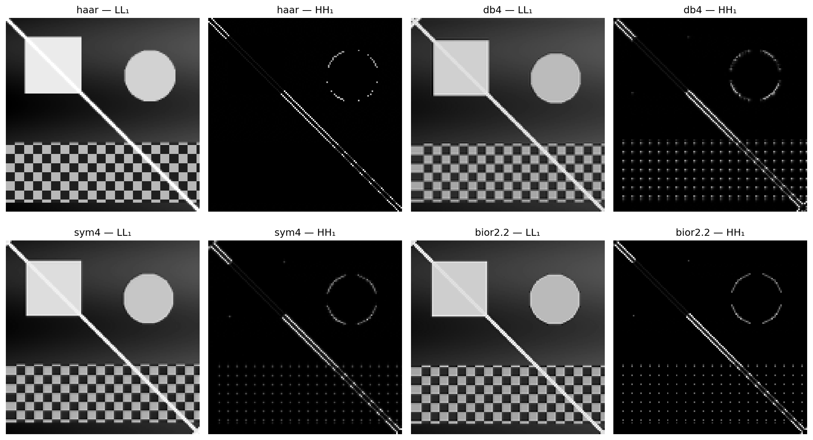
Figura 5.21: Comparação entre famílias de wavelets: Haar, db4, sym4 e bior2.2. Subbanda LL₁ (aproximação) e HH₁ (diagonal) para cada escolha, ilustrando o compromisso entre compactação e suavidade com base no padrão sintético.
5.6.4.3 Limiarização de Coeficientes e Compressão
Uma das principais aplicações da Transformada Wavelet Discreta (DWT) é a compressão de dados, impulsionada pela capacidade de representação esparsas dos coeficientes. A Figura 5.22 ilustra o efeito da limiarização abrupta (hard thresholding), técnica na qual coeficientes de detalhe com magnitude inferior a um limiar \(T\) são integralmente anulados antes do processo de síntese realizado pela Transformada Wavelet Discreta Inversa (IDWT).
À medida que o limiar \(T\) é elevado, um volume crescente de coeficientes de alta frequência é zerado. Por concentrarem menor energia, a remoção dessas componentes reduz consideravelmente a quantidade de informação necessária para representar a imagem, mantendo a componente de aproximação global (a subbanda \(LL\) mais profunda) intacta para preservar a estrutura macro. Visualmente, esse descarte de coeficientes manifesta-se através do desaparecimento progressivo de texturas finas e da suavização de transições abruptas de intensidade.
A fidelidade da imagem reconstruída frente à original é quantificada pela métrica de Pico da Relação Sinal-Ruído (PSNR, Peak Signal-to-Noise Ratio), expressa em decibéis (dB). Valores mais altos de PSNR indicam menor distorção e maior proximidade matemática com o sinal original. O experimento prático evidencia o decaimento gradual do PSNR conforme a agressividade da limiarização aumenta, permitindo avaliar numericamente o limiar ótimo para o balanço entre compressão e degradação visual.
import numpy as npimport cv2import pywt# Garante que img_gray utilize o mesmo padrão sintético claroif'gerar_imagem_sintetica'inglobals(): img_gray = gerar_imagem_sintetica(256)else:# Fallback caso o bloco anterior não tenha sido executado na mesma sessãodef gerar_imagem_sintetica(N=256): img = np.zeros((N, N), dtype=np.float64)for y inrange(N):for x inrange(N): v =55+35* (x / N) +15* np.sin(y /24)if24< x <100and24< y <100: v =225 cx, cy, r =190, 76, 34if (x - cx)**2+ (y - cy)**2< r**2: v =205if y >164and y <244: p =12 v =185if ((x // p + y // p) %2==0) else65ifabs(x - y) <4: v =240 img[y, x] = np.clip(v, 0, 255)return img.astype(np.uint8) img_gray = gerar_imagem_sintetica(256)def dwt_threshold_reconstruct(img, wavelet='db4', nivel=2, threshold=0.0):"""Decompõe, aplica limiar e reconstrói via IDWT.""" coefs = pywt.wavedec2(img.astype(np.float64), wavelet, level=nivel)# Copia e aplica hard thresholding em todos os detalhes coefs_t = [coefs[0]] # LL final não é limiarizadofor detalhe in coefs[1:]: coefs_t.append(tuple(pywt.threshold(sb, threshold, mode='hard') for sb in detalhe)) rec = pywt.waverec2(coefs_t, wavelet)# Recorte para dimensão original rec = rec[:img.shape[0], :img.shape[1]]return np.clip(rec, 0, 255).astype(np.uint8)thresholds = [0, 10, 30, 60, 100]imgs_thr = [img_gray]titles_thr = ["Original"]for t in thresholds: rec = dwt_threshold_reconstruct(img_gray, threshold=t) psnr = cv2.PSNR(img_gray, rec) imgs_thr.append(rec) titles_thr.append(f"T={t} PSNR={psnr:.1f} dB")mm.show(imgs_thr, titles=titles_thr, cols=3, figsize=(14, 10))
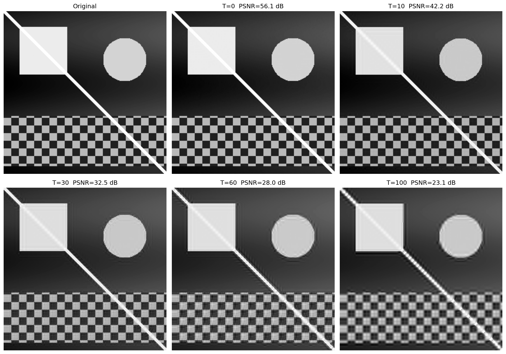
Figura 5.22: Reconstrução wavelet com limiarização de coeficientes (hard thresholding): à medida que o limiar aumenta, mais detalhes são zerados, produzindo imagens progressivamente mais suaves. Métrica PSNR quantifica a perda de qualidade sobre o padrão sintético.
Síntese — Fourier vs. Wavelets: quando utilizar cada abordagem?
A Tabela 5.5 sintetiza as principais diferenças estruturais e operacionais entre a Transformada Discreta de Fourier (DFT) e a Transformada Wavelet Discreta (DWT).
Tabela 5.5: Comparação entre a Transformada Discreta de Fourier (DFT) e a Transformada Wavelet Discreta (DWT), destacando suas principais características e aplicações.
Critério
Fourier (DFT)
Wavelet (DWT)
Funções de base
Senoides de suporte infinito
Funções de suporte compacto
Localização espacial
Não explícita (global)
Explícita (local)
Filtragem espectral
Excelente para controle fino de frequências
Baseada em subbandas (escalas)
Compressão de imagens
Base da DCT (JPEG tradicional)
Base da DWT (JPEG 2000)
Análise multiescala
Não
Sim
Remoção de ruído periódico
Altamente eficiente
Pouco indicada
Sinais não estacionários
Limitada
Altamente eficiente
Em termos práticos, a DFT consolida-se como a ferramenta ideal para análise espectral pura, projeto de filtros seletivos no domínio da frequência e atenuação de ruídos periódicos e harmônicos. Por outro lado, a DWT sobressai-se em cenários que exigem a preservação rigorosa da localização espacial das feições associada ao seu conteúdo frequencial, destacando-se em compressão de dados, análise multirresolução e processamento de transições abruptas. Desse modo, ambas as transformadas devem ser compreendidas como técnicas perfeitamente complementares, mapeando caminhos distintos e específicos para a resolução de problemas em PDI-VC.
NotaAnalogias com Áudio: Limitações e Cuidados
Ao fazer analogias entre processamento de imagens e áudio, é importante considerar as diferenças fundamentais:
Em sistemas de áudio estéreo/multicanais, a fase entre canais é crucial para a percepção de localização espacial (diferenças interaurais de fase e tempo).
Em sistemas monaurais, a fase tem influência perceptual limitada — o ouvido humano é relativamente insensível à fase absoluta de componentes senoidais isolados.
Em imagens, a fase da DFT é sempre fundamental para a localização espacial de estruturas, independentemente de ser uma imagem monocromática ou colorida.
A analogia entre fase em áudio e fase em imagens deve ser usada com cautela, destacando que, embora ambas carreguem informações sobre a organização espacial/temporal do sinal, os mecanismos perceptuais são fundamentalmente diferentes.
5.7 Compressão de Imagens
Enquanto as wavelets estabelecem a fundação teórica do padrão JPEG 2000, o padrão JPEG tradicional baseia-se na Transformada Discreta de Cossenos (DCT, Discrete Cosine Transform). Apesar das diferenças estruturais, ambas as abordagens compartilham o mesmo princípio fundamental: compactar a energia da imagem em um número reduzido de coeficientes e descartar as componentes de menor relevância com impacto visual mínimo.
O objetivo central da compressão é reduzir o volume de dados necessário para o armazenamento ou transmissão de uma imagem. Esse processo é viabilizado pela identificação e eliminação de redundâncias estruturais e perceptuais.
5.7.1 Taxonomia das Redundâncias
O desenvolvimento de algoritmos de compressão fundamenta-se na identificação e eliminação de três categorias principais de redundância, sintetizadas na Tabela 5.6.
Tabela 5.6: Categorias de redundância em imagens digitais e seus respectivos mecanismos de exploração.
Tipo
Definição
Abordagem de Exploração
Espacial (interpixel)
Alta correlação e dependência estatística entre pixels vizinhos.
DCT, DWT e codificação preditiva.
Espectral (intercanal)
Correlação estatística entre os canais de cor de uma mesma imagem.
Transformações de espaço de cor (ex: RGB para \(YC_bC_r\)).
Psicovisual
Insensibilidade do sistema visual humano (SVH) a variações de alta frequência e baixo contraste.
Processos de quantização seletiva de coeficientes.
A depender da preservação da informação original após o processo de decodificação, os métodos de compressão dividem-se em duas classes fundamentais:
Sem perda (lossless): Garante uma reconstrução bit a bit idêntica à imagem original. É empregada em cenários onde a integridade dos dados é estritamente crítica, como em imagens médicas, diagnósticos por imagem e armazenamento de documentos textuais.
Com perda (lossy): Admite a introdução de uma distorção controlada no sinal em troca de taxas de compressão substancialmente mais elevadas. É a abordagem padrão para fotografias de consumo e streaming de vídeo, ecossistemas nos quais o SVH tolera pequenas atenuações de alta frequência sem percepção de degradação da qualidade visual.
5.7.2 Transformada de Cossenos Discreta (DCT-II 2D)
A Transformada de Cossenos Discreta (DCT) constitui a operação central do padrão JPEG. Diferentemente da DFT, que utiliza uma base complexa, a DCT baseia-se em funções trigonométricas puramente reais. Para um bloco de imagem \(f(x,y)\) de dimensões \(N \times N\), a DCT-II 2D mapeia o sinal espacial para o domínio das frequências espaciais, gerando a matriz de coeficientes \(C(u,v)\) por meio de:
onde os fatores de normalização ortogonal são dados por \(\alpha(0) = \sqrt{1/N}\) e \(\alpha(k) = \sqrt{2/N}\) para \(k > 0\).
Cada coeficiente \(C(u,v)\) quantifica a contribuição — ou “peso” — de uma frequência espacial específica dentro daquele bloco. O termo \(C(0,0)\) é denominado componente DC e representa a intensidade média do bloco (frequência nula). Os demais coeficientes, chamados de componentes AC (Alternating Current), correspondem às frequências espaciais progressivamente maiores.
5.7.3 As Funções de Base da DCT
Sob uma perspectiva geométrica, a Equação 5.9 realiza a projeção do bloco de pixels sobre um conjunto de funções ortogonais. Para o caso padrão do JPEG (\(N=8\)), o bloco espacial é decomposto em uma combinação linear de 64 funções de base bidimensionais, denotadas por \(B_{u,v}(x,y)\) e geradas pelo produto de funções cossenoidais:
Dessa forma, a operação inversa pode ser interpretada como a reconstrução exata do bloco original por meio da soma ponderada dessas 64 matrizes de base, onde cada coeficiente \(C(u,v)\) atua como o peso analítico de sua respectiva componente harmônica.
A frequência espacial indicada pelos índices \((u,v)\) determina o número de ciclos de oscilação ao longo das dimensões horizontais e verticais do bloco. Como ilustrado na Figura 5.23 — cujo código isola cada base aplicando a transformação inversa sobre impulsos unitários —, essas 64 funções são organizadas em uma matriz \(8 \times 8\). O canto superior esquerdo (\(u=0, v=0\)) exibe o padrão uniforme de frequência nula (DC), enquanto o avanço para a direita (eixo \(u\)) ou para baixo (eixo \(v\)) mapeia variações harmônicas progressivamente maiores, representando transições rápidas, bordas e texturas nas orientações horizontais, verticais e diagonais.
NotaDCT vs DFT: Vantagem da Compactação de Energia
Tanto a DCT quanto a DFT mapeiam um bloco \(N \times N\) espacial em uma matriz de coeficientes de mesma dimensão. Contudo, para imagens naturais, a DCT apresenta maior eficiência na compactação de energia nas baixas frequências. Isso ocorre porque a DCT assume implicitamente uma simetria par do sinal nas fronteiras do bloco, o que equivale a uma extensão periódica contínua, minimizando o efeito de espalhamento espectral (ringing). Como consequência, a maioria dos coeficientes AC decai rapidamente para valores próximos de zero, otimizando o pipeline de compressão sem introduzir degradação visual perceptível.
from scipy.fft import dct, idct # linha adicionadafig, axes = plt.subplots(8, 8, figsize=(6, 6))fig.subplots_adjust(hspace=0.05, wspace=0.05)for i inrange(8):for j inrange(8): coef = np.zeros((8, 8)); coef[i, j] =1 b = idct(idct(coef.T, norm='ortho').T, norm='ortho') axes[i, j].imshow(b, cmap='gray') axes[i, j].axis('off')plt.suptitle("As 64 Bases da DCT 8x8", y=0.92, fontsize=12, fontweight='bold')plt.show()
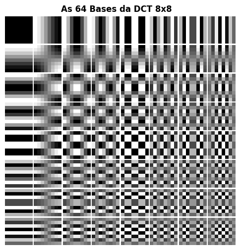
Figura 5.23: O Alfabeto Visual do JPEG: As 64 funções de base da DCT-II. O coeficiente DC fica no topo esquerdo (suave). Ao descer e avançar à direita, a oscilação espacial aumenta drasticamente.
5.7.4 Concentração de Energia e Reconstrução Progressiva
Antes da aplicação da DCT, os pixels do bloco de intensidade são rotineiramente transladados (subtraindo-se \(128\) para imagens de 8 bits) a fim de centralizar o sinal em torno de zero, eliminando componentes contínuas desnecessárias. Ao computar a DCT sobre o bloco resultante, a propriedade de compactação de energia torna-se evidente: a quase totalidade da variância e da informação da imagem original concentra-se no coeficiente DC (\(C(0,0)\)) e nos primeiros harmônicos AC de baixa frequência.
A Figura 5.24 demonstra esse fenômeno por meio de uma reconstrução progressiva por truncamento abrupto. Em vez de utilizar todos os 64 coeficientes, o algoritmo preserva apenas os \(k\) primeiros componentes — selecionados com base em uma varredura que prioriza as baixas frequências espaciais — e anula os demais.
A síntese inversa (IDCT) realizada com apenas uma fração dos coeficientes (como 15% ou 30%) já é capaz de recuperar as estruturas e a iluminação macro do bloco original de pixels. À medida que harmônicos de frequências mais altas são progressivamente reincorporados, os detalhes finos e as transições rápidas são restaurados. Esse comportamento valida o princípio da compressão perceptual: as altas frequências descartadas possuem pouca energia e sua ausência, em condições normais, gera um impacto visual secundário na percepção do observador.
from scipy.fft import dct, idctdef dct2(bloco):"""DCT-II 2D ortogonal (separável)."""return dct(dct(bloco.T, norm='ortho').T, norm='ortho')def idct2(coefs):"""IDCT-II 2D ortogonal."""return idct(idct(coefs.T, norm='ortho').T, norm='ortho')# ── Bloco 8×8 centralizado da imagem ─────────────────────────────────────────cy, cx = img_gray.shape[0]//2, img_gray.shape[1]//2bloco = img_gray[cy:cy+8, cx:cx+8].astype(np.float64) -128.0C = dct2(bloco)print("Coeficientes DCT do bloco 8×8:")print(np.round(C).astype(int))print(f"\nEnergia DC : {C[0,0]**2:.1f}")print(f"Energia total : {(C**2).sum():.1f}")print(f"Fração no DC : {C[0,0]**2/ (C**2).sum():.1%} ← concentração de energia")# ── Reconstrução progressiva ──────────────────────────────────────────────────imgs_rec = [cv2.normalize((bloco+128).astype(np.uint8), None, 0, 255, cv2.NORM_MINMAX)]titles_rec = ["Bloco original\n(8×8 pixels)"]for keep in [1, 4, 10, 20, 40, 64]: C_trunc = np.zeros_like(C) indices =sorted([(u,v) for u inrange(8) for v inrange(8)], key=lambda p: p[0]+p[1])for u, v in indices[:keep]: C_trunc[u, v] = C[u, v] rec = np.clip(idct2(C_trunc) +128, 0, 255).astype(np.uint8) imgs_rec.append(rec) titles_rec.append(f"{keep} coef.\n({keep/64:.0%} do total)")mm.show(imgs_rec, titles=titles_rec, cols=4, figsize=(12, 7))
Figura 5.24: DCT 2D em bloco 8×8: coeficientes e reconstrução progressiva.
5.7.5 O Pipeline de Compressão JPEG
O padrão JPEG opera dividindo a imagem em blocos disjuntos de \(8 \times 8\) pixels, processados por meio de uma sequência de transformações espaciais, perceptuais e estatísticas. O pipeline completo de codificação é estruturado em seis etapas principais:
A Tabela 5.7 detalha a função analítica e o fundamento perceptual que justifica cada uma dessas etapas.
Tabela 5.7: Etapas do pipeline de compressão JPEG e seus respectivos fundamentos de projeto.
Etapa
Operação
Fundamento Perceptual e Estatístico
1
Conversão \(RGB \rightarrow YC_bC_r\)
Separa a luminância (\(Y\)) da crominância (\(C_b, C_r\)). O sistema visual humano (SVH) apresenta maior sensibilidade a variações de brilho do que de cor.
2
Subamostragem de crominância (ex: 4:2:0)
Reduz a resolução espacial dos canais de cor pela metade, descartando dados redundantes com impacto visual desprezível.
3–4
Centralização e aplicação da DCT \(8 \times 8\)
Translada os pixels para o intervalo \([-128, 127]\) e compacta a energia espectral do bloco nos coeficientes de baixa frequência.
5
Quantização linear seletiva
Divide cada coeficiente \(C(u,v)\) pelo elemento correspondente da matriz \(Q(u,v)\), aplicando arredondamento inteiro. Constitui a principal fonte de compressão com perda.
6
Varredura em ziguezague e codificação
Ordena os coeficientes quantizados para maximizar sequências nulas consecutivas, otimizando a codificação por comprimento de corrida (RLE) e a codificação de Huffman.
A matriz de quantização\(Q(u,v)\) é o mecanismo central de controle do compromisso entre taxa de compressão e qualidade visual. No algoritmo prático da Figura 5.25, o fator de qualidade estipulado pelo usuário (escala de 1 a 100) é convertido em um escalar que parametriza a severidade da matriz \(Q\). Valores reduzidos de qualidade expandem os divisores de \(Q(u,v)\), forçando o truncamento em massa dos coeficientes AC para zero. Quando essa eliminação é excessiva, a descontinuidade nas fronteiras dos blocos adjacentes não é atenuada na reconstrução, gerando os denominados artefatos de bloco (blocking artifacts).
A Lógica da Varredura em Ziguezague
A eficiência do codificador entrópico subsequente à quantização depende diretamente da ordenação dos dados. Como a DCT concentra a energia vital no vértice superior esquerdo da matriz (baixas frequências) e empurra os coeficientes nulos para as extremidades opostas, a leitura linear por linhas ou colunas fragmentaria as sequências de zeros.
A ordenação em ziguezague soluciona essa limitação ao percorrer a matriz diagonalmente em ordem crescente de frequência espacial. Esse mapeamento agrupa os coeficientes significativos no início do vetor e concentra os coeficientes nulos em uma única sequência contínua ao final do arranjo, permitindo que o algoritmo RLE codifique grandes blocos de dados de forma compacta e eficiente.
NotaO que é RLE?
RLE (Run-Length Encoding) é uma técnica de compressão sem perdas que codifica sequências consecutivas de valores idênticos — especialmente zeros — como um par (contagem, valor). No JPEG, após a varredura em ziguezague, os coeficientes quantizados são organizados de modo que os zeros se concentrem ao final do vetor. O RLE então comprime essa longa corrida de zeros com extrema eficiência, otimizando o armazenamento e a transmissão da imagem comprimida.
import numpy as npimport cv2from scipy.fft import dct, idct# ── Carregamento Seguro da Imagem da Câmera (skimage) ─────────────────────────try:from skimage import data img_gray = data.camera()exceptImportError:import subprocess subprocess.run(["pip", "install", "scikit-image", "-q"])from skimage import data img_gray = data.camera()# Redimensiona levemente para 256x256 para manter o padrão e velocidade dos testes anterioresimg_gray = cv2.resize(img_gray, (256, 256))# ── Tabela de quantização luminância (padrão JPEG) ────────────────────────────Q_luma = np.array([ [16,11,10,16,24,40,51,61], [12,12,14,19,26,58,60,55], [14,13,16,24,40,57,69,56], [14,17,22,29,51,87,80,62], [18,22,37,56,68,109,103,77], [24,35,55,64,81,104,113,92], [49,64,78,87,103,121,120,101], [72,92,95,98,112,100,103,99]], dtype=np.float64)def dct2(bloco):"""DCT-II 2D ortogonal (separável)."""return dct(dct(bloco.T, norm='ortho').T, norm='ortho')def idct2(coefs):"""IDCT-II 2D ortogonal."""return idct(idct(coefs.T, norm='ortho').T, norm='ortho')def jpeg_compress_block(bloco, Q_table):"""DCT → quantização → dequantização → IDCT em bloco 8×8.""" C = dct2(bloco.astype(np.float64) -128) Cq = np.round(C / Q_table) * Q_table # quantiza e dequantizareturn np.clip(idct2(Cq) +128, 0, 255)def jpeg_quality_compress(img, qualidade=50):"""JPEG simplificado: comprime imagem inteira por blocos 8×8."""if qualidade <50: escala =5000/ qualidadeelse: escala =200-2* qualidade# Corrigido de 'scala' para 'escala' Q = np.clip(np.round(Q_luma * escala /100), 1, 255) h, w = img.shape result = np.zeros_like(img, dtype=np.float64)for r inrange(0, h-7, 8):for c inrange(0, w-7, 8): result[r:r+8, c:c+8] = jpeg_compress_block(img[r:r+8, c:c+8], Q)return result.astype(np.uint8)# ── Comparação de fatores de qualidade ───────────────────────────────────────qualidades = [10, 25, 50, 75, 90]imgs_jpeg = [img_gray]titles_jpeg = ["Original\n(Cameraman)"]for q in qualidades: rec = jpeg_quality_compress(img_gray, qualidade=q) psnr = cv2.PSNR(img_gray, rec) imgs_jpeg.append(rec) titles_jpeg.append(f"Q={q}\nPSNR={psnr:.1f}dB")mm.show(imgs_jpeg, titles=titles_jpeg, cols=3, figsize=(14, 10))
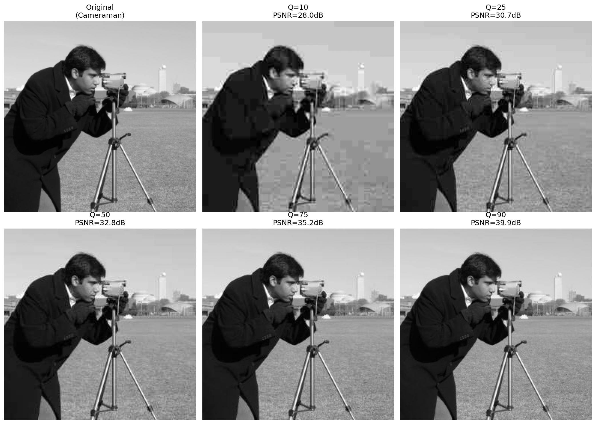
Figura 5.25: Pipeline JPEG simplificado aplicado à imagem clássica do Cameraman: DCT em blocos 8×8, quantização com diferentes fatores de qualidade e reconstrução via IDCT. Os artefatos de bloco (blocking artifacts) tornam-se visualmente evidentes em fatores de qualidade reduzidos (\(Q=10\) e \(Q=25\)).
5.7.6 Simulador Interativo: Quantização DCT
O simulador da Figura 5.26 permite explorar o impacto do processo de quantização sobre um bloco \(8 \times 8\) extraído de uma imagem real, sintetizando em tempo real as seguintes componentes:
Bloco original e reconstruído: Representação direta dos pixels no domínio espacial em escala de cinza [0, 255].
Coeficientes DCT: Distribuição da energia mapeada de forma logarítmica em um gradiente cromático, evidenciando a concentração de intensidade no vértice superior esquerdo (baixas frequências).
Coeficientes quantizados: Exibição dos valores inteiros resultantes da divisão pela matriz \(Q(u,v)\), tornando visualmente explícito o surgimento em massa de coeficientes nulos (em tons escuros) conforme o fator de qualidade é reduzido.
Métricas de compressão: Painel de monitoramento que quantifica o Erro Quadrático Médio (MSE), o número de coeficientes preservados e o volume de zeros gerados para a codificação entrópica.
Figura 5.26: Simulador interativo de compressão DCT-JPEG: ajuste o fator de qualidade e visualize em tempo real os coeficientes zerados, o bloco reconstruído e o erro de quantização.
5.8 Comparação de Formatos de Imagem
A escolha de um formato de armazenamento digital impacta diretamente o compromisso entre qualidade visual, tamanho de arquivo e custo computacional de decodificação. Os três formatos de maior relevância para arquiteturas web e sistemas de computação visual são o JPEG, o PNG e o WebP.
5.8.1 Características dos Formatos
A Tabela 5.8 sintetiza as propriedades estruturais dos principais formatos de imagem rasterizados.
Tabela 5.8: Comparação estrutural entre os principais formatos de imagem rasterizados.
Característica
JPEG
PNG
WebP
Compressão
Com perda
Sem perda
Com e sem perda.
Transparência (canal alfa)
Não
Sim
Sim.
Suporte a animação
Não
Limitado (APNG)
Sim.
Algoritmo base
DCT + Huffman
DEFLATE (LZ77 + Huffman)
VP8 / VP8L.
Melhor para
Fotografia
Gráficos, texto e ícones
Uso universal em ambiente Web.
Pior para
Texto e bordas nítidas
Imagens fotográficas complexas
Compatibilidade legada.
5.8.2 Métricas de Avaliação de Qualidade
Duas métricas objetivas são amplamente adotadas para quantificar a distorção introduzida por processos de compressão:
Pico da Relação Sinal-Ruído (PSNR, Peak Signal-to-Noise Ratio):\[
\text{PSNR} = 10\,\log_{10}\!\left(\frac{L^2}{\text{MSE}}\right) \quad [\text{dB}]
\tag{5.10}\]
onde \(L = 255\) para imagens quantizadas em 8 bits e \(\text{MSE}\) representa o Erro Quadrático Médio (Mean Squared Error). Valores de PSNR acima de 40 dB indicam excelente fidelidade; entre 30 dB e 40 dB representam boa qualidade; e valores inferiores a 30 dB correspondem a degradações visuais facilmente perceptíveis.
O SSIM avalia janelas locais da imagem com base em três componentes complementares: luminância (\(\mu_f, \mu_g\)), contraste (\(\sigma_f, \sigma_g\)) e estrutura (\(\sigma_{fg}\)), ponderados por constantes de estabilidade \(c_1\) e \(c_2\). O índice varia no intervalo \([-1, 1]\), onde a unidade representa a identidade perfeita. Ao contrário do PSNR, o SSIM considera a organização espacial dos erros, alinhando-se à percepção do sistema visual humano (SVH).
NotaPSNR vs SSIM: Aplicação de Métricas Perceptuais
O PSNR possui formulação matemática simples e baixo custo computacional, contudo, tende a superestimar a qualidade em imagens com distorções localizadas ou subestimá-la em variações globais de brilho toleradas pelo observador. O SSIM modela com maior fidelidade a percepção biológica, mas exige maior esforço de processamento. Para análises rigorosas de codificadores, recomenda-se reportar ambas as métricas estatísticas em caráter complementar.
5.8.3 Inspeção Visual: Natureza dos Artefatos de Compressão
A natureza matemática do codificador dita o tipo de degradação introduzida em taxas de bits reduzidas. Conforme ilustrado na Figura 5.27, a compressão agressiva via DCT no padrão JPEG segmenta a imagem em malhas rígidas, gerando os artefatos de bloco (blocking artifacts). Em contrapartida, algoritmos baseados em codificação preditiva ou representações submetidas a transformadas espaciais avançadas (como o WebP e o JPEG 2000) eliminam as descontinuidades de bloco, mas introduzem perda de textura fina e borramentos característicos ao redor de bordas de alto contraste.
import osimport cv2# Garante a existência do diretório e grava os arquivos comprimidosos.makedirs("imagens/comp_test", exist_ok=True)cv2.imwrite("imagens/comp_test/camera_q10.jpg", img_gray, [cv2.IMWRITE_JPEG_QUALITY, 10])cv2.imwrite("imagens/comp_test/camera_q10.webp", img_gray, [cv2.IMWRITE_WEBP_QUALITY, 10])# Extração de região de interesse para visualização de artefatos (Zoom de 4x)zoom_original = cv2.resize(img_gray[120:200, 150:230], (320, 320), interpolation=cv2.INTER_NEAREST)rec_jpeg = cv2.imread("imagens/comp_test/camera_q10.jpg", cv2.IMREAD_GRAYSCALE)zoom_jpeg = cv2.resize(rec_jpeg[120:200, 150:230], (320, 320), interpolation=cv2.INTER_NEAREST)rec_webp = cv2.imread("imagens/comp_test/camera_q10.webp", cv2.IMREAD_GRAYSCALE)zoom_webp = cv2.resize(rec_webp[120:200, 150:230], (320, 320), interpolation=cv2.INTER_NEAREST)mm.show([zoom_original, zoom_jpeg, zoom_webp], titles=["Zoom Original", "JPEG Q=10 (Artefato de Bloco)", "WebP Q=10 (Suavização)"], cols=3, figsize=(14, 5))
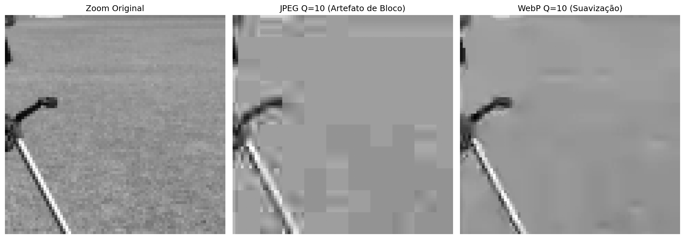
Figura 5.27: Análise comparativa de artefatos de compressão sob fator de qualidade reduzido (\(Q=10\)). À esquerda, observa-se o artefato de bloco característico da discretização por DCT no JPEG. À direita, evidencia-se o efeito de atenuação e suavização de bordas intrínseco ao padrão WebP.
5.8.4 Avaliação Quantitativa e Espacial da Compressão
A validação dos algoritmos de compressão com perda exige uma análise que correlacione o custo de armazenamento à fidelidade do sinal reconstruído. Essa avaliação é realizada de forma complementar através de curvas de desempenho global e pelo mapeamento local das distorções induzidas pelos codificadores.
5.8.4.1 Curvas de Taxa-Distorção
A Figura 5.28 apresenta a avaliação empírica do pipeline JPEG e WebP por meio de curvas de taxa-distorção, que monitoram o ganho de compressão (tamanho do arquivo em KB) em função do PSNR. O formato PNG atua como linha de base ideal (\(\text{PSNR} = \infty\)), pois sua natureza lossless impede qualquer degradação, embora demande um volume de dados substancialmente maior.
A análise das curvas demonstra a superioridade e a eficiência do padrão WebP sobre o JPEG tradicional: para atingir um mesmo patamar de fidelidade matemática (como a faixa de excelente qualidade, onde \(\text{PSNR} > 40\text{ dB}\)), o codificador WebP gera arquivos significativamente menores. Esse comportamento traduz o impacto prático da evolução dos algoritmos na otimização de sistemas de transmissão e armazenamento digital.
import osimport cv2import matplotlib.pyplot as plt# Garante a existência do diretório de testesos.makedirs("imagens/comp_test", exist_ok=True)resultados = []# ── JPEG ──────────────────────────────────────────────────────────────────────for q in [10, 20, 30, 40, 50, 60, 70, 80, 90, 95]: path =f"imagens/comp_test/camera_q{q}.jpg" cv2.imwrite(path, img_gray, [cv2.IMWRITE_JPEG_QUALITY, q]) rec = cv2.imread(path, cv2.IMREAD_GRAYSCALE) resultados.append({"formato": "JPEG", "qualidade": q,"PSNR": cv2.PSNR(img_gray, rec),"KB": os.path.getsize(path)/1024})# ── PNG ───────────────────────────────────────────────────────────────────────path_png ="imagens/comp_test/camera.png"cv2.imwrite(path_png, img_gray, [cv2.IMWRITE_PNG_COMPRESSION, 9])resultados.append({"formato": "PNG", "qualidade": "lossless","PSNR": float('inf'), "KB": os.path.getsize(path_png)/1024})# ── WebP ──────────────────────────────────────────────────────────────────────for q in [50, 75, 90]: path_w =f"imagens/comp_test/camera_q{q}.webp" cv2.imwrite(path_w, img_gray, [cv2.IMWRITE_WEBP_QUALITY, q]) rec_w = cv2.imread(path_w, cv2.IMREAD_GRAYSCALE) resultados.append( {"formato": "WebP", "qualidade": q,"PSNR": cv2.PSUB_VAL if'cv2.PSNR'inglobals() else cv2.PSNR(img_gray, rec_w),"KB": os.path.getsize(path_w)/1024})# ── Geração da Curva Taxa-Distorção ───────────────────────────────────────────jpeg_r = [r for r in resultados if r["formato"]=="JPEG"]webp_r = [r for r in resultados if r["formato"]=="WebP"]png_r = [r for r in resultados if r["formato"]=="PNG"]fig, ax = plt.subplots(figsize=(8, 4.5))ax.plot([r["KB"] for r in jpeg_r], [r["PSNR"] for r in jpeg_r],"o-", label="JPEG", color="#D85A30", lw=2, ms=5)ax.plot([r["KB"] for r in webp_r], [r["PSNR"] for r in webp_r],"s-", label="WebP", color="#534AB7", lw=2, ms=5)ax.axhline(50, color="#1D9E75", lw=2, ls="--", label=f"PNG sem perda ({png_r[0]['KB']:.1f} KB)")ax.axhspan(40, 60, alpha=0.05, color="#1D9E75", label="Qualidade excelente (PSNR>40)")ax.set(xlabel="Tamanho do arquivo (KB)", ylabel="PSNR (dB)", title="Curva Taxa-Distorção: JPEG × WebP × PNG")ax.legend(fontsize=9)ax.grid(True, alpha=0.3)plt.tight_layout()plt.show()print(f"\nTamanho bruto (sem compressão): {img_gray.nbytes/1024:.0f} KB")print(f"\n{'Formato':>8}{'Qual.':>6}{'KB':>7}{'PSNR (dB)':>11}")print("-"*38)for r in resultados: psnr_s =f"{r['PSNR']:>11.2f}"if r['PSNR']!=float('inf') elsef"{'∞ (lossless)':>11}"print(f"{r['formato']:>8}{str(r['qualidade']):>6}{r['KB']:>7.1f}{psnr_s}")
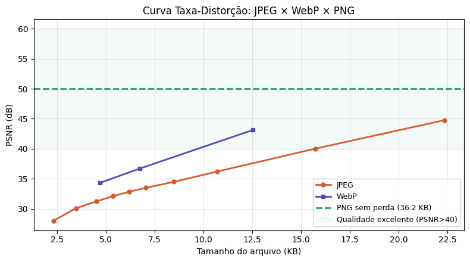
Figura 5.28: Curva taxa-distorção: PSNR vs tamanho de arquivo para JPEG, WebP e PNG aplicada à imagem do Cameraman.
A imagem Cameraman (\(256 \times 256\) pixels em escala de cinza) ocupa 64 KB em formato bruto (sem compressão). Como referência, o PNG lossless comprime esse volume para 36,2 KB — evidenciando que a compressão sem perdas já reduz significativamente o armazenamento para imagens com regiões homogêneas. Em contrapartida, os formatos com perda (JPEG e WebP) atingem tamanhos ainda menores: o JPEG com qualidade 95 ocupa 22,3 KB (PSNR ≈ 45 dB), enquanto o WebP com qualidade 90 atinge 12,5 KB com PSNR equivalente, demonstrando sua superioridade em eficiência de compressão.
5.8.4.2 Mapeamento Espacial de Erros e Correlação Perceptual
Embora o PSNR ofereça um indicativo numérico rápido, métricas globais falham em discriminar como a perda de informação se distribui geometricamente sobre a imagem. A Figura 5.29 soluciona essa limitação ao associar as reconstruções em diferentes qualidades aos seus respectivos mapas de erro absoluto e ao SSIM.
Os mapas residuais — obtidos pela diferença absoluta normalizada entre a imagem original e a comprimida — revelam a assinatura espacial intrínseca de cada arquitetura de codificação:
Em altas qualidades (\(Q=95\) a \(Q=75\)): As distorções concentram-se predominantemente ao redor de transições abruptas de intensidade (bordas), fruto do espelhamento espectral decorrente do descarte de altas frequências. O índice SSIM permanece próximo à unidade, atestando a integridade das estruturas originais.
Em qualidades agressivas (\(Q=50\) a \(Q=25\)): O erro assume uma estrutura de malha ortogonal regularizada. Esse padrão geométrico evidencia o surgimento dos artefatos de bloco (blocking artifacts), indicando que a quantização severa corrompeu a correlação espacial entre blocos adjacentes de \(8 \times 8\) pixels.
O SSIM captura essa degradação morfológica de forma muito mais sensível que o PSNR, penalizando o escore final à medida que a organização estrutural e as texturas finas — às quais o sistema visual humano é altamente responsivo — são eliminadas pelo codificador.
import osimport numpy as npimport cv2try:from skimage.metrics import structural_similarity as ssimexceptImportError:import subprocess subprocess.run(["pip", "install", "scikit-image", "-q"])from skimage.metrics import structural_similarity as ssim# Garante a existência do diretório de testesos.makedirs("imagens/comp_test", exist_ok=True)qualidades_ssim = [25, 50, 75, 95]imgs_ssim = [img_gray]titles_ssim = ["Original"]for q in qualidades_ssim: path =f"imagens/comp_test/camera_ssim_q{q}.jpg"# GRAVAÇÃO FORÇADA: Gera e grava o JPEG com a qualidade atual no caminho correto img_compactada = jpeg_quality_compress(img_gray, qualidade=q) cv2.imwrite(path, img_compactada)# Leitura segura do arquivo recém-gravado rec = cv2.imread(path, cv2.IMREAD_GRAYSCALE)if rec isNone: continueif rec.shape != img_gray.shape: rec = cv2.resize(rec, (img_gray.shape[1], img_gray.shape[0])) psnr_v = cv2.PSNR(img_gray, rec) ssim_v, _ = ssim(img_gray, rec, full=True)# Diferença absoluta normalizada para evidenciar a estrutura espacial do erro diff_vis = cv2.normalize(np.abs(img_gray.astype(float) - rec.astype(float)),None, 0, 255, cv2.NORM_MINMAX).astype(np.uint8) imgs_ssim += [rec, diff_vis] titles_ssim += [f"Q={q}\nPSNR={psnr_v:.1f}dB | SSIM={ssim_v:.3f}",f"Mapa de erro (Q={q})\n(Bordas e blocagem)"]mm.show(imgs_ssim, titles=titles_ssim, cols=3, figsize=(14, 14))
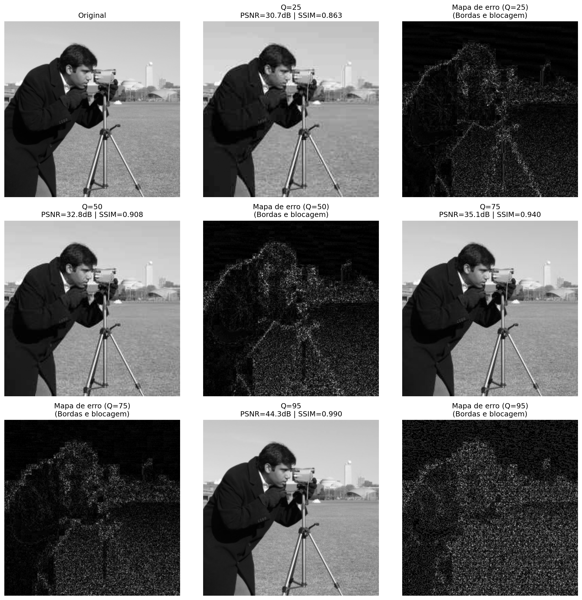
Figura 5.29: Análise espacial de degradação: imagens reconstruídas e respectivos mapas de erro absoluto normalizados para diferentes fatores de qualidade JPEG.
NotaInterpretando os mapas de erro
Os mapas de erro apresentados foram normalizados individualmente (cv2.NORM_MINMAX) para maximizar o contraste visual e revelar a estrutura espacial das distorções. Isso significa que:
Em Q=95, o erro absoluto é da ordem de 0.5–1.5 níveis de cinza (imperceptível visualmente), mas a normalização o amplifica para preto-branco para evidenciar sua localização em bordas e transições.
Em Q=25, o erro absoluto é 10–20 vezes maior (5–15 níveis de cinza), mas a normalização também o leva ao mesmo intervalo [0, 255].
Portanto, a intensidade do branco nos mapas NÃO é comparável entre diferentes qualidades — os mapas servem apenas para revelar a assinatura espacial do erro (bordas vs blocos), não sua magnitude. A magnitude correta é dada pelos valores de PSNR e SSIM, que mostram claramente que Q=95 tem erro muito menor que Q=25.
Síntese — Compressão JPEG
O processo de compressão no padrão JPEG baseia-se na aplicação combinada de transformações espaciais, perceptuais e estatísticas para reduzir as redundâncias de uma imagem. A Tabela 5.9 resume o papel de cada etapa no pipeline e seu respectivo impacto na redução de dados.
Tabela 5.9: Síntese das etapas do pipeline de compressão JPEG e seus respectivos impactos.
Etapa
Operação Analítica
Mecanismo de Ganho / Compressão
Conversão \(YC_bC_r\)
Isolamento dos canais de luminância e crominância.
Modela a percepção do SVH, permitindo tratar cor e brilho de forma independente.
Subamostragem 4:2:0
Redução da resolução espacial dos canais de cor (\(C_b\) e \(C_r\)).
Elimina aproximadamente 50% dos dados brutos com impacto visual mínimo.
DCT \(8 \times 8\)
Mapeamento do domínio espacial para o domínio de frequências espaciais.
Compactação de energia, concentrando a informação vital nos primeiros coeficientes.
Quantização Linear
Divisão inteira dos coeficientes por uma matriz de ponderação \(Q(u,v)\).
Principal fonte de compressão com perda; elimina altas frequências imperceptíveis.
Codificação Entrópica
Aplicação de algoritmos RLE e codificação de Huffman.
Compressão estatística sem perda, otimizada pelas longas corridas de coeficientes nulos.
Artefatos de Degradação Característicos
A aplicação de taxas de compressão excessivamente agressivas (fatores de qualidade reduzidos) introduz distorções previsíveis na imagem reconstruída, decorrentes das limitações matemáticas do modelo:
Artefatos de bloco (blocking artifacts): Descontinuidades geométricas visíveis nas fronteiras dos blocos de \(8 \times 8\) pixels, causadas pela perda de correlação espacial após a quantização severa das componentes AC.
Efeito de espalhamento (ringing): Oscilações fantasmas ou distorções de “fumaça” ao redor de bordas nítidas e de alto contraste, provocadas pela eliminação abrupta de harmônicos de alta frequência necessários para reconstruir funções degrau.
Perda de textura fina: Atenuação de detalhes de alta frequência e baixo contraste (como gramados, tecidos ou porosidade), fazendo com que regiões originalmente texturizadas assumam um aspecto excessivamente liso ou homogeneizado.
5.9 Aplicação Prática: Remoção de Ruído por Filtragem Híbrida
Reunindo as técnicas consolidadas ao longo deste capítulo, apresenta-se um pipeline completo de restauração de imagens que combina a análise espectral no domínio da frequência com a filtragem adaptativa no domínio espacial. O objetivo é atenuar um ruído misto (composto por degradação Gaussiana e interferência periódica) preservando ao máximo os detalhes estruturais da imagem original.
O par de métricas estatísticas PSNR e SSIM fornece uma avaliação qualitativa e morfológica complementar do processo de restauração:
PSNR: Penaliza uniformemente o desvio quadrático médio pixel a pixel.
SSIM: Avalia a preservação de estruturas locais perceptualmente relevantes (luminância, contraste e contornos).
Na prática, existe um compromisso analítico (trade-off) entre redução de ruído e preservação de detalhes: filtros espaciais excessivamente agressivos atenuam bem o ruído de alta frequência, mas degradam texturas finas e suavizam bordas nítidas — o que reduz simultaneamente tanto o PSNR quanto o SSIM em relação à imagem original. O desafio do projeto de filtros é encontrar o ponto de equilíbrio que maximize ambas as métricas, garantindo uma restauração fiel e visualmente agradável.
5.9.1 Análise de Desempenho e Conclusão do Capítulo
Os resultados numéricos e visuais gerados pela Figura 5.30 demonstram a relevância prática de associar diferentes domínios de processamento. A inserção simultânea de ruído periódico e estocástico corrompe as propriedades morfológicas do sinal, reduzindo severamente os índices de similaridade e a relação sinal-ruído da imagem de referência.
O isolamento e a supressão dos picos harmônicos no domínio da frequência por meio da máscara notch removem as franjas de interferência senoidais espalhadas sobre o espaço bi-dimensional. Como evidenciado nos dados impressos da Figura 5.30, essa filtragem cirúrgica promove um salto imediato e substancial na métrica PSNR. Contudo, o ruído Gaussiano de alta frequência permanece ativo de forma homogênea no espectro, exigindo uma abordagem complementar.
A restauração final é consolidada no domínio espacial com a introdução do filtro bilateral. Diferentemente de operadores passa-baixas convencionais (como o Gaussiano ou de média), que suavizariam indiscriminadamente o ruído e os contornos estruturais, a filtragem bilateral calcula pesos ponderados pela proximidade geométrica e pela diferença de intensidade radiométrica. Esse comportamento adaptativo atenua as flutuações estocásticas remanescentes nas regiões de transição suave e preserva a nitidez das bordas espaciais.
A convergência de ambas as abordagens resulta em uma melhoria substancial e simultânea do PSNR e do SSIM em relação à imagem ruidosa — embora os valores finais permaneçam inferiores aos da imagem original (PSNR = \(\infty\), SSIM = 1,0), devido à perda inevitável de informações espectrais e texturais durante os processos de filtragem. A atenuação suave (gaussiana) dos picos no espectro evita artefatos de ringing, enquanto o filtro bilateral elimina o ruído estocástico residual sem comprometer a nitidez das bordas. Os resultados comprovam a eficácia e a complementaridade prática das ferramentas de análise de frequência apresentadas neste capítulo, demonstrando que a filtragem híbrida (frequência + espacial) é superior a qualquer abordagem isolada para a restauração de imagens degradadas por ruído misto.
Figura 5.30: Pipeline completo de remoção de ruído misto: (1) adição de ruído gaussiano e periódico; (2) identificação de picos de interferência no espectro de frequências; (3) aplicação de máscara notch com atenuação gaussiana suave; (4) pós-processamento via filtro bilateral para eliminação do ruído estocástico residual.
5.10 Resumo do Capítulo
A transição do domínio espacial para o domínio da frequência revela a distribuição espectral de energia da imagem, estabelecendo a base analítica para a filtragem avançada, restauração e compressão de dados. A articulação estrutural desses conceitos é sintetizada no mapa conceitual da Figura 5.31.
Figura 5.31: Mapa conceitual das transformações e propriedades no domínio da frequência.
Fundamentos Essenciais
DFT e Percepção Visual: O espectro decompõe a imagem em componentes harmônicas. A fase retém a inteligibilidade geométrica da cena e a localização de contornos, enquanto a magnitude dita a distribuição de contraste e amplitudes globais.
Eficiência Algorítmica: O Teorema da Convolução viabiliza o processamento de máscaras de grande escala no domínio da frequência via FFT, reduzindo a complexidade computacional assintótica de \(O(N^2 K^2)\) no espaço para \(O(N^2 \log N)\).
Fenômeno de Ringing: Cortes abruptos no espectro (Filtros Ideais) geram oscilações espaciais indesejadas (fenômeno de Gibbs). A atenuação suave por filtros de Butterworth ou Gaussianos elimina essas descontinuidades.
Análise Multirresolução via Wavelets: Superando o caráter puramente global de Fourier, a DWT captura a frequência e a localização espacial simultaneamente, fundamentando o padrão JPEG 2000 e subsidiando representações hierárquicas análogas às extrações de feições em Redes Neurais Convolucionais (CNNs).
Compressão Perceptual (DCT): O pipeline JPEG explora as limitações de contraste do sistema visual humano em altas frequências espaciais. A DCT isola a energia de blocos \(8 \times 8\), permitindo que a quantização descarte coeficientes AC de detalhes finos sem prejuízo perceptual severo.
Próximos Passos: O Capítulo 6 inaugura a Parte II da obra, aplicando as ferramentas de processamento de imagens na resolução de problemas reais de inspeção industrial. Serão exploradas técnicas de segmentação e análise de formas para a detecção automática de falhas em linhas de produção — desde a identificação de defeitos superficiais em peças até a leitura QRCode em provas, consolidando a ponte entre a teoria apresentada na Parte I e as demandas práticas da visão computacional.
5.11 🤖 Uso do Gemini Notebook como Tutor Complementar
Nesta edição, incentiva-se o uso da plataforma Gemini Notebook como ferramenta complementar de aprendizagem — não como substituta da leitura atenta, da resolução de exercícios ou da experimentação prática. Baseado em arquiteturas de inteligência artificial, o sistema utiliza exclusivamente o material didático e os documentos fornecidos pelo autor como base de conhecimento, assegurando que as respostas geradas estejam conceitualmente alinhadas ao conteúdo programático e à abordagem pedagógica adotada ao longo desta obra.
Diretrizes sobre o Conteúdo Gerado por Inteligência Artificial
Embora as ferramentas de inteligência artificial constituam aliados eficientes no processo de aprendizagem e revisão, o conteúdo gerado está sujeito a inconsistências ou imprecisões técnicas. Desse modo, é indispensável a consulta sistemática a livros-texto, artigos científicos e fontes acadêmicas indexadas para a validação rigorosa das informações. Recomenda-se veementemente a execução e a modificação dos exemplos práticos em Python fornecidos neste capítulo como método primário de verificação experimental dos resultados.
5.12 Lista de Exercícios
(10%) Implementação Direta da DFT 2D: Implemente analiticamente a Transformada Discreta de Fourier 2D (DFT) sem o auxílio de funções nativas de bibliotecas (como np.fft.fft2), utilizando estritamente a formulação matemática definida na Equação 5.1 para uma matriz de dimensões \(16 \times 16\). Realize a validação numérica comparando os coeficientes gerados com os resultados da função np.fft.fft2, certificando-se de que o desvio absoluto máximo seja inferior a \(10^{-8}\). Mensure os tempos de execução de ambos os métodos e apresente uma justificativa teórica para a disparidade observada em termos de complexidade assintótica.
(15%) Supressão de Ruído Periódico: Adicione interferências senoidais com frequências espaciais \((u_0, v_0) \in \{(5,10), (20,5), (30,30)\}\) à imagem de teste do Cameraman. Para cada cenário de degradação, projete uma máscara de filtragem notch específica no domínio da frequência para isolar e atenuar os picos harmônicos indesejados. Avalie quantitativamente a eficácia do processo de restauração por meio do cálculo das métricas de PSNR e SSIM. Discuta analiticamente o compromisso (trade-off) entre a atenuação do ruído senoidal e a indesejada atenuação de feições estruturais legítimas da imagem.
(15%) Análise Comparativa de Operadores Passa-Baixa: Realize um estudo comparativo entre os filtros passa-baixa Ideal, Gaussiano e Butterworth (com ordens harmônicas \(n = 1, 2, 4\)), parametrizados com frequências de corte \(D_0 = 20, 40, 60\) pixels. Para cada combinação estrutural, calcule os índices PSNR e SSIM da imagem resultante frente ao sinal original de referência. Organize os dados quantitativos em uma tabela estruturada e plote os gráficos unidimensionais das funções de transferência correspondentes ao longo do perfil horizontal \(H(u, 0)\).
(15%) Banco de Filtros Multirresolução de Haar: Desenvolva um script para executar manualmente a decomposição wavelet discreta 2D de primeiro nível utilizando a família Haar. O algoritmo deve calcular os coeficientes dos filtros correspondentes passa-baixa (\(h\)) e passa-alta (\(g\)), aplicando-os de forma separável sobre as linhas e colunas da matriz, seguidos pela operação de decimação (subamostragem espacial por um fator de 2). Valide numericamente a exatidão da sua implementação confrontando as subbandas obtidas com a saída da função pywt.dwt2(img, 'haar').
(15%) Compressão Esparsa por Limiarização Wavelet: Aplique a técnica de filtragem por limiarização abrupta (hard thresholding) sobre os coeficientes de detalhe da decomposição wavelet, adotando os limiares numéricos \(T \in \{5, 10, 20, 40, 80\}\) para as famílias Haar, Daubechies (db4) e Symlets (sym4). Após realizar o processo de síntese por meio da transformada inversa (pywt.waverec2), compute os valores de PSNR e SSIM de cada imagem reconstruída. Identifique e justifique qual combinação de família wavelet e limiar \(T\) maximiza a similaridade estrutural.
(15%) Construção de Codificador JPEG Simplificado: Implemente o pipeline completo de compressão de dados simulando o padrão JPEG. O fluxo deve englobar: conversão espacial \(RGB \rightarrow YC_bC_r\), subamostragem cromática na proporção 4:2:0, segmentação da luminância em blocos disjuntos de \(8 \times 8\) pixels, aplicação da DCT-II 2D ortogonal, e quantização linear baseada na matriz normalizada de luminância escalada por fatores de qualidade desejados. Realize a decodificação inversa e compare quantitativamente as reconstruções com os arquivos gerados pela função cv2.imencode para os fatores de qualidade de 20, 50 e 80.
(15%) Análise Perceptual em Conteúdos Heterogêneos: Desenvolva uma imagem sintética composta por três regiões distintas e de características espectrais contrastantes: uma textura fotográfica complexa (representando altas frequências estocásticas), uma área de texto vetorizado com bordas nítidas (representando transições degrau puras) e um gradiente linear contínuo (representando baixas frequências homogêneas). Submeta essa imagem mista aos processos de compressão sob os formatos JPEG, PNG e WebP. Avalie e interprete os resultados correlacionando o tamanho final do arquivo em disco às métricas PSNR e SSIM obtidas, justificando qual formato exibe o melhor desempenho para sinais de natureza heterogênea e por que essa vantagem ocorre em termos de compactação de energia e preservação perceptual.
Referências do Capítulo
A fundamentação teórica e o desenvolvimento analítico dos conceitos abordados neste capítulo fundamentam-se nas seguintes obras de referência:
Gonzalez; Woods (2018) — Formulações clássicas de Transformadas Discretas de Fourier 2D (DFT), projeto de filtros analíticos no domínio da frequência, Transformada Discreta de Cossenos (DCT) e princípios fundamentais de sistemas de compressão de imagens.
Oppenheim; Schafer (2010) — Teoria formal de sinais e sistemas aplicados no domínio discreto, cobrindo as propriedades matemáticas da DFT e a modelagem analítica do Teorema da Convolução.
Mallat (1999) — Fundamentação matemática da teoria de wavelets, formalização da análise multirresolução (MRA) e arquitetura de bancos de filtros diádicos.
Wallace (1991) — Especificação original e aspectos de engenharia do padrão de compressão ISO/IEC JPEG, com ênfase nos critérios psicovisuais para o projeto de matrizes de quantização DCT.
Szeliski (2022) — Modelagem computacional e caracterização de métricas modernas de fidelidade e qualidade perceptual (PSNR e SSIM), bem como a análise comparativa de formatos de imagem rasterizados de alto desempenho.
5.13 💻 Parte Prática com Exercícios de Programação
🚧 Em construção!
A presente lista de exercícios de programação (EP) consolida as formulações teóricas apresentadas ao longo do Capítulo 5 — Transformadas e Compressão — por meio de uma trilha prática aplicada. Os exercícios são estruturados a partir de matrizes de dimensões reduzidas, viabilizando a validação analítica e a inspeção manual de cada coeficiente, mantendo a consistência metodológica adotada nos capítulos anteriores.
O encadeamento dos exercícios reproduz rigorosamente o fluxo conceitual do capítulo: inicia-se com a implementação explícita da Transformada Discreta de Fourier (DFT) a partir de sua definição matemática fundamental; avança-se para o projeto de filtros passa-baixa e máscaras notch no domínio da frequência; aplica-se a quantização de coeficientes (núcleo da compressão com perda); e conclui-se com a integração dessas etapas na construção de um pipeline de compressão JPEG simplificado e na análise perceptual de formatos de imagem.
ImportanteDiretrizes para a Resolução dos Exercícios de Programação
Em todos os exercícios deste capítulo, as coordenadas do centro do espectro (origem das frequências espaciais pós-aplicação do deslocamento fftshift) devem ser determinadas via divisão inteira. Para uma matriz com \(L\) linhas e \(C\) colunas, a componente de frequência nula localiza-se na posição:
Esta convenção é rigorosamente idêntica à adotada pela função np.fft.fftshift. Ademais, em todas as etapas que exijam discretização ou arredondamento numérico (seja na quantização de coeficientes AC ou na reconstrução final de pixels), deve-se empregar o arredondamento padrão para o inteiro mais próximo (round half away from zero), mitigando ambiguidades em valores com fração exatamente igual a \(0.5\).
🎯 Objetivo deste Caderno
O caderno permite desenvolver, validar, organizar e testar soluções de Exercícios de Programação (EPs) em ambientes interativos, como o Colab, com os mesmos casos de teste do Moodle, copiando para lá apenas na hora de registrar a nota oficial.
Download
Baixe morph.py e testsuite.py executando a célula abaixo:
Para avaliar os testes, execute TestSuite("EP05_01.extensão").run() numa nova célula, trocando a extensão pela da linguagem usada (.py, .java, .c, .cpp, .js ou .r). O sistema baixa os casos de teste do GitHub, executa o programa e calcula a nota automaticamente.
Para testar código Python diretamente, sem salvar arquivo, use run_code(codigo) passando o código como string numa variável codigo:
codigo ="""from morph import mm# ... seu código aqui ..."""TestSuite("EP05_01").run_code(codigo)
5.13.1 EP05_01 🟢 Filtro Passa-Baixa Ideal por Distância no Espectro
Em um scanner de documentos antigo, o sensor capta papel amassado e textura de fibra junto com o texto — ruído de alta frequência que “polui” o espectro nas bordas. O técnico de manutenção não tem acesso à imagem original, apenas ao espectro de magnitude já calculado pelo software do scanner. Seu trabalho é simples e cirúrgico: manter apenas o círculo central de baixas frequências (a estrutura global do documento) e apagar tudo que estiver fora do raio \(D_0\), eliminando a textura fina sem nem precisar tocar na imagem espacial.
Este é o Filtro Passa-Baixa Ideal (LPFI): a operação espectral mais direta do capítulo, mas também a que melhor revela a anatomia de um espectro centrado.
5.13.1.1 📋 Diretrizes de Implementação
Dimensões: Ler os inteiros \(L\) (linhas) e \(C\) (colunas) do espectro de magnitude — já fornecido centrado (equivalente à saída de np.fft.fftshift).
Frequência de corte: Ler o inteiro \(D_0\).
Dados: Ler os valores inteiros da matriz de magnitude, linha a linha.
Centro do espectro: Calcular \((c_y, c_x) = (L \mathbin{//} 2,\; C \mathbin{//} 2)\).
Distância: Para cada posição \((u,v)\), calcular \[
D(u,v) = \sqrt{(u-c_y)^2 + (v-c_x)^2}
\]
Ajuste D₀ e observe quais posições do espectro 5×5 sobrevivem ao filtro.
1
Espectro Original (magnitude)
Resultado Filtrado
Figura 5.32: Simulador: Filtro Passa-Baixa Ideal no Espectro
%%writefile EP05_01.py# Código Python
Writing EP05_01.py
TestSuite("EP05_01.py").run()
✔️ EP05_01.cases já existe em casos/
📋 5 caso(s) carregado(s) de casos/EP05_01.cases
🔍 Testando Python: EP05_01.py
⚠️ EP05_01.py: Arquivo sem conteúdo (menos de 3 linhas). Testes ignorados.
Uma câmera de inspeção industrial captura imagens de placas de circuito, mas a fonte de alimentação da linha de produção introduz uma interferência elétrica periódica — um padrão de listras quase imperceptível a olho nu, mas que aparece no espectro de Fourier como pares de picos brilhantes simetricamente posicionados em torno do centro. A equipe de visão computacional não pode reprocessar a captura: precisa localizar e apagar cirurgicamente esses pares de picos no espectro, preservando todo o resto da informação útil da imagem.
Esse é o papel do filtro rejeita-banda notch: diferente do passa-baixa (que afeta uma região contínua), ele ataca pontos específicos e seus simétricos, deixando o restante do espectro intocado.
5.13.2.1 📋 Diretrizes de Implementação
Dimensões: Ler os inteiros \(L\) (linhas) e \(C\) (colunas) do espectro de magnitude centrado.
Dados: Ler os valores inteiros da matriz de magnitude, linha a linha.
Picos: Ler o inteiro \(K\) (quantidade de pares de picos a remover).
Para cada um dos \(K\) picos: ler três inteiros \(\Delta v\), \(\Delta u\), \(r\) — deslocamento vertical, deslocamento horizontal e raio do notch.
Centro do espectro:\((c_y, c_x) = (L \mathbin{//} 2,\; C \mathbin{//} 2)\).
Supressão simétrica: para cada pico, zerar todas as posições \((u,v)\) tais que a distância ao ponto \((c_y+\Delta v,\, c_x+\Delta u)\) for \(\le r\), e também todas as posições com distância \(\le r\) ao ponto simétrico \((c_y-\Delta v,\, c_x-\Delta u)\).
Saída: Exibir a matriz resultante com dimensões \(L \times C\).
5.13.2.2 📌 Restrições Computacionais
Simetria obrigatória: cada pico informado gera dois discos zerados (o ponto e seu simétrico em relação ao centro) — esquecer o simétrico é o erro mais comum.
Sobreposição: se dois discos se sobrepõem, a posição permanece zerada (não há “soma” ou restauração).
Comparação não estrita: uma posição é zerada se \(\text{distância} \le r\).
Ordem de leitura: os \(K\) picos devem ser processados na ordem em que aparecem na entrada, mas o resultado final independe da ordem (operações de zerar são comutativas).
5.13.2.3 🧠 Fundamentação Teórica
Conceito
Papel no filtro notch
Pico em \((\Delta v, \Delta u)\)
Frequência da interferência periódica detectada visualmente no espectro
Ponto simétrico \((-\Delta v,-\Delta u)\)
Toda DFT de sinal real é hermitiana: picos sempre aparecem em pares simétricos ao centro
Raio \(r\)
Controla a “largura” da rejeição — \(r\) grande remove mais energia ao redor do pico, mas também informação útil
5.13.2.4 📦 Especificação de Entrada e Saída (VPL)
Entrada:
Linha 1: Inteiro \(L\).
Linha 2: Inteiro \(C\).
Linhas seguintes: Elementos inteiros da matriz de magnitude (centrada), \(L\) linhas.
Próxima linha: Inteiro \(K\).
\(K\) linhas seguintes: três inteiros \(\Delta v\), \(\Delta u\), \(r\) (separados por espaço).
Saída:
Matriz resultante em \(L\) linhas e \(C\) colunas, separados por espaço.
Centro \((c_y, c_x) = (2, 2)\). Pico informado \((\Delta v, \Delta u) = (1, 1)\) gera o ponto \((3, 3)\) (valor 19) e seu simétrico \((1, 1)\) (valor 7), ambos zerados com \(r=0\) (apenas os pontos exatos).
🎮 Simulador: Filtro Notch🟡 par simétrico
Mova Δv e Δu para escolher o pico — note como o par simétrico também é apagado.
1
1
0
Espectro 5×5 (vermelho = removido)
Figura 5.33: Simulador: Filtro Notch
%%writefile EP05_02.py# Código Python
Writing EP05_02.py
TestSuite("EP05_02.py").run()
✔️ EP05_02.cases já existe em casos/
📋 5 caso(s) carregado(s) de casos/EP05_02.cases
🔍 Testando Python: EP05_02.py
⚠️ EP05_02.py: Arquivo sem conteúdo (menos de 3 linhas). Testes ignorados.
5.13.3 EP05_03 🟠 Quantização DCT: a Verdadeira Fonte de Compressão
Um aplicativo de galeria de fotos precisa reduzir o tamanho de milhares de imagens antes de fazer upload para a nuvem, sem recodificar tudo do zero. O engenheiro responsável já tem os coeficientes DCT de cada bloco \(4\times4\) calculados (a etapa cara computacionalmente já foi feita) — falta apenas aplicar a tabela de quantização, a etapa que realmente descarta informação e gera compressão. Coeficientes de alta frequência, menos perceptíveis ao olho humano, recebem divisores grandes e tendem a virar zero; coeficientes de baixa frequência, mais perceptíveis, recebem divisores pequenos e sobrevivem quase intactos.
Você vai implementar exatamente essa etapa: quantizar e desquantizar (dividir, arredondar, multiplicar de volta) — o coração da compressão lossy do JPEG.
5.13.3.1 📋 Diretrizes de Implementação
Dimensão do bloco: Ler o inteiro \(N\) (bloco \(N \times N\)).
Coeficientes: Ler a matriz \(C\) de coeficientes DCT, \(N\) linhas com \(N\) inteiros cada (podem ser negativos).
Tabela de quantização: Ler a matriz \(Q\), \(N\) linhas com \(N\) inteiros positivos cada.
Quantização: Para cada posição \((u,v)\), calcular o índice quantizado \[
\tilde{C}(u,v) = \text{round}\!\left(\frac{C(u,v)}{Q(u,v)}\right)
\] usando arredondamento padrão para o inteiro mais próximo (valores intermediários .5 nunca ocorrem nos casos de teste).
Saída: Exibir a matriz reconstruída \(C'\), \(N \times N\), inteiros.
5.13.3.2 📌 Restrições Computacionais
Round-trip completo: a saída é o coeficiente reconstruído (\(\tilde{C} \times Q\)), não o índice quantizado isolado.
Divisão em ponto flutuante: a divisão \(C(u,v)/Q(u,v)\) deve ser feita em ponto flutuante antes do arredondamento — divisão inteira truncada produzirá resultado incorreto.
Sinal preservado: coeficientes negativos mantêm o sinal após quantização e reconstrução.
\(Q(u,v) > 0\) sempre: não há necessidade de tratar divisão por zero.
5.13.3.3 🧠 Fundamentação Teórica
Coeficiente
Frequência
Valor típico de \(Q\)
Efeito da quantização
\(C(0,0)\)
DC (média do bloco)
Pequeno
Quase sempre sobrevive — domina a energia
\(C(u,v)\) baixo \(u+v\)
Baixa frequência
Pequeno/médio
Parcialmente preservado
\(C(u,v)\) alto \(u+v\)
Alta frequência
Grande
Frequentemente vira zero — fonte da compressão
5.13.3.4 📦 Especificação de Entrada e Saída (VPL)
Entrada:
Linha 1: Inteiro \(N\).
\(N\) linhas seguintes: matriz \(C\) (coeficientes DCT, inteiros, podem ser negativos).
\(N\) linhas seguintes: matriz \(Q\) (tabela de quantização, inteiros positivos).
Saída:
Matriz reconstruída \(C'\), \(N \times N\), inteiros separados por espaço.
\(C(0,0)=50/2=25 \to 25\times2=50\) (preservado). \(C(0,2)=-5/7\approx-0.71\to-1\to-1\times7=-7\). Já \(C(1,1)=-3/7\approx-0.43\to0\): zerado pela quantização — a maior parte do bloco vira zero, ilustrando a compactação de energia no canto superior esquerdo.
🎮 Simulador: Quantização DCT🟠 round(C/Q)×Q
Ajuste a escala de Q e veja quantos coeficientes sobrevivem (não-zero) após o round-trip.
1.0×
Coeficientes DCT (C)
Reconstruído (round(C/Q)·Q)
Figura 5.34: Simulador: Quantização DCT (round-trip)
%%writefile EP05_03.py# Código Python
Writing EP05_03.py
TestSuite("EP05_03.py").run()
✔️ EP05_03.cases já existe em casos/
📋 5 caso(s) carregado(s) de casos/EP05_03.cases
🔍 Testando Python: EP05_03.py
⚠️ EP05_03.py: Arquivo sem conteúdo (menos de 3 linhas). Testes ignorados.
5.13.4 EP05_04 🔴 Implementando a DFT 2D a Partir da Definição
Um laboratório de pesquisa em astronomia computacional recebeu, de uma missão antiga, um pequeno sensor experimental cujos dados brutos não podem ser processados por bibliotecas modernas de FFT — o ambiente de validação é isolado e só permite operações aritméticas básicas. A equipe precisa reimplementar a Transformada de Fourier Discreta 2D a partir da própria definição matemática, célula por célula, para depois comparar bit a bit com np.fft.fft2 em outro ambiente.
Este é o exercício mais conceitual da lista: não há atalhos. Você vai implementar o duplo somatório da Equação 5.1 diretamente, evidenciando por que a FFT existe — e o custo computacional que ela evita.
5.13.4.1 📋 Diretrizes de Implementação
Dimensões: Ler os inteiros \(M\) (linhas) e \(N\) (colunas) da imagem \(f(x,y)\).
Dados: Ler os valores inteiros de \(f(x,y)\), linha a linha.
DFT 2D: Para cada par de frequências \((u,v)\) com \(u=0,\ldots,M-1\) e \(v=0,\ldots,N-1\), calcular \[
F(u,v) = \sum_{x=0}^{M-1}\sum_{y=0}^{N-1} f(x,y)\, e^{-j2\pi\left(\frac{ux}{M}+\frac{vy}{N}\right)}
\] usando a identidade de Euler \(e^{-j\theta} = \cos(\theta) - j\sin(\theta)\) para separar parte real e imaginária — não utilize nenhuma função de FFT pronta.
Magnitude: Calcular \(|F(u,v)| = \sqrt{\text{Re}(F)^2 + \text{Im}(F)^2}\) e arredondar para o inteiro mais próximo.
Saída: Exibir a matriz de magnitudes arredondadas, \(M \times N\), na mesma ordem (sem fftshift — o DC permanece em \((0,0)\)).
5.13.4.2 📌 Restrições Computacionais
Proibido usar bibliotecas de FFT: a implementação deve calcular os somatórios duplos explicitamente (laços aninhados), mesmo que mais lenta.
Sem fftshift: a saída mantém a convenção crua da DFT, com o componente DC em \(F(0,0)\) (canto superior esquerdo).
Arredondamento: a magnitude final deve ser arredondada para o inteiro mais próximo; nos casos de teste não há ambiguidade .5.
Precisão: pequenos erros de ponto flutuante (ordem de \(10^{-6}\)) antes do arredondamento são esperados e não afetam o resultado inteiro final.
5.13.4.3 🧠 Fundamentação Teórica
Elemento
Significado
\(F(0,0)\)
Componente DC — soma de todos os pixels, \(F(0,0) = \sum f(x,y)\)
Parte real \(\text{Re}(F)\)
Projeção do sinal sobre cossenos
Parte imaginária \(\text{Im}(F)\)
Projeção do sinal sobre senos
Complexidade desta implementação
\(\mathcal{O}((MN)^2)\) — por isso a FFT, com \(\mathcal{O}(MN\log(MN))\), é indispensável em imagens reais
5.13.4.4 📦 Especificação de Entrada e Saída (VPL)
Entrada:
Linha 1: Inteiro \(M\).
Linha 2: Inteiro \(N\).
Linhas seguintes: Elementos inteiros de \(f(x,y)\), \(M\) linhas.
Saída:
Matriz de magnitudes \(|F(u,v)|\) arredondadas, \(M \times N\), separadas por espaço.
Clique nas células de f(x,y) para alterar os valores (incrementa de 1 em 1, shift+clique decrementa) e veja F(u,v) recalculado ao vivo.
f(x,y) — domínio espacial
|F(u,v)| — magnitude (sem shift)
Figura 5.35: Simulador: DFT 2D manual
%%writefile EP05_04.py# Código Python
Writing EP05_04.py
TestSuite("EP05_04.py").run()
✔️ EP05_04.cases já existe em casos/
📋 5 caso(s) carregado(s) de casos/EP05_04.cases
🔍 Testando Python: EP05_04.py
⚠️ EP05_04.py: Arquivo sem conteúdo (menos de 3 linhas). Testes ignorados.
5.13.5 EP05_05 🏆 Pipeline JPEG Completo: DCT, Quantização e Reconstrução
Você foi contratado para criar, do zero, um codec JPEG didático em ambiente embarcado, sem qualquer biblioteca de imagem disponível — apenas operações matemáticas básicas. O cliente quer entender exatamente onde a qualidade é perdida e onde ela é recuperada, bloco por bloco. Este é o desafio final do capítulo: integrar tudo o que foi estudado — a DCT-II ortonormal, a quantização perceptual e a reconstrução via IDCT — em um único pipeline de ponta a ponta, processando um bloco \(N \times N\) do início ao fim, exatamente como o padrão JPEG faz internamente, \(8\times8\) pixels de cada vez.
5.13.5.1 📋 Diretrizes de Implementação
Dimensão do bloco: Ler o inteiro \(N\).
Bloco original: Ler a matriz de pixels \(f(x,y)\), \(N\) linhas com \(N\) inteiros em \([0,255]\).
Tabela de quantização: Ler a matriz \(Q\), \(N \times N\) inteiros positivos.
Centralização: Subtrair 128 de cada pixel: \(g(x,y) = f(x,y) - 128\).
DCT-II 2D ortonormal: Calcular \[
C(u,v) = \alpha(u)\,\alpha(v)\sum_{x=0}^{N-1}\sum_{y=0}^{N-1} g(x,y)\,\cos\!\left[\frac{\pi(2x+1)u}{2N}\right]\cos\!\left[\frac{\pi(2y+1)v}{2N}\right]
\] com \(\alpha(0)=\sqrt{1/N}\) e \(\alpha(k)=\sqrt{2/N}\) para \(k>0\).
IDCT-II 2D (inversa ortonormal): Calcular \(g'(x,y)\) a partir de \(C'(u,v)\) usando a transformada inversa correspondente (mesma base, somatório sobre \(u,v\)).
Reversão da centralização e arredondamento:\(f'(x,y) = \text{round}(g'(x,y) + 128)\), restrito ao intervalo \([0,255]\) (clipping).
Saída: Exibir o bloco reconstruído \(f'\), \(N \times N\), inteiros.
5.13.5.2 📌 Restrições Computacionais
Pipeline completo obrigatório: todas as seis etapas (centralizar, DCT, quantizar, desquantizar, IDCT, reverter) devem ser implementadas — pular a quantização não passa nos testes, pois o resultado seria idêntico ao original.
Clipping: valores reconstruídos fora de \([0,255]\) devem ser truncados (0 se negativo, 255 se maior que 255).
Arredondamento: tanto na quantização quanto na reconstrução final dos pixels, use arredondamento padrão; os casos de teste evitam ambiguidade .5.
Base ortonormal: a normalização \(\alpha(u)\) e \(\alpha(v)\) deve ser aplicada exatamente como especificado — sem ela, a IDCT não reconstrói corretamente.
Após DCT, quantização agressiva nas altas frequências (valores grandes de \(Q\) no canto inferior direito) e reconstrução via IDCT, o bloco fica próximo do original, mas não idêntico — a diferença é o custo da compressão lossy.
5.13.5.6 💡 Dica de Depuração
Se o resultado não bater, verifique nesta ordem: (1) os coeficientes DCT brutos (antes da quantização) — eles devem reconstruir o original exatamente via IDCT se você pular a etapa 6–7; (2) a tabela \(\alpha(u)\) — erro comum é aplicar \(\sqrt{2/N}\) também para \(u=0\); (3) o arredondamento da quantização, que deve ocorrer antes de multiplicar de volta por \(Q\).
Ajuste o fator de qualidade e observe o bloco reconstruído se afastar (ou se aproximar) do original.
1.0×
Bloco Original
Reconstruído (DCT→Q→IDCT)
Figura 5.36: Simulador: Pipeline JPEG completo em bloco
%%writefile EP05_05.py# Código Python
Writing EP05_05.py
TestSuite("EP05_05.py").run()
✔️ EP05_05.cases já existe em casos/
📋 5 caso(s) carregado(s) de casos/EP05_05.cases
🔍 Testando Python: EP05_05.py
⚠️ EP05_05.py: Arquivo sem conteúdo (menos de 3 linhas). Testes ignorados.
GONZALEZ, R. C.; WOODS, R. E. Digital Image Processing. 4th. ed. New York: Pearson, 2018.
MALLAT, Stéphane. A wavelet tour of signal processing. [S.l.]: Elsevier, 1999.
OPPENHEIM, Alan V.; SCHAFER, Ronald W. Discrete-Time Signal Processing. [S.l.]: Pearson, 2010.